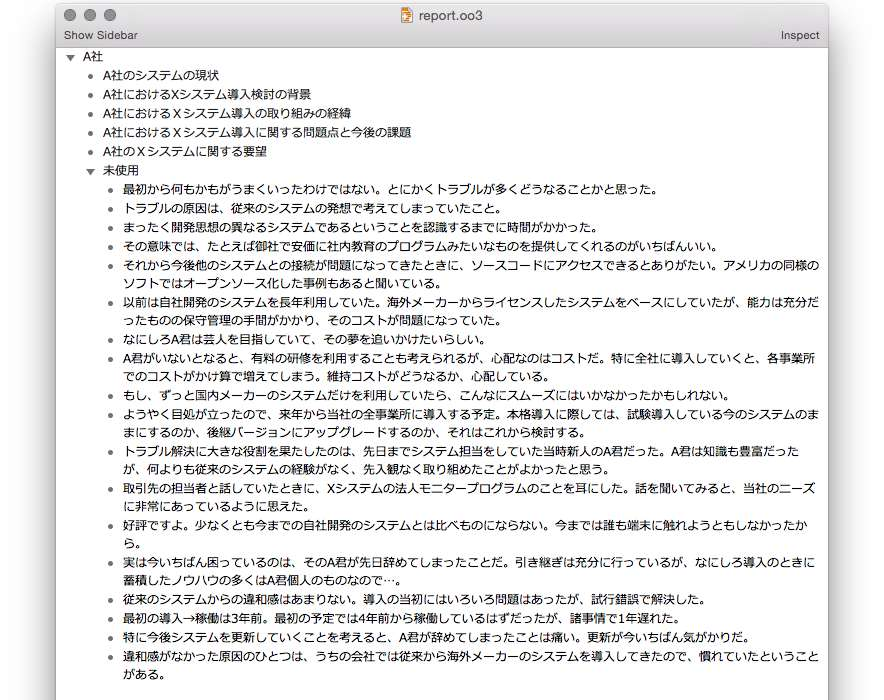

| アウトライン・プロセッシング入門: アウトライナーで文章を書き、考える技術 | |
| Tak. | |
| (2015) | |
はじめに
みなさんは日常的にどのくらい文章を書くでしょうか。
仕事や研究でレポートや企画書を書くという方は多いでしょう。プライベートでブログを書いたりFacebookに投稿するという方はもっと多いかもしれません。
でも現代の生活で「書くこと」はそれだけではありません。今日やることのリストを作る。明日の会議で報告する内容を整理する。クライアントに自社製品についてうまく説明する方法を考える。旅行に出発するまでにやらなければならないことを書き出す。夕食の献立を考え、買い物リストをつくる......どれも広い意味で「書くこと」です。あるいは「考えること」と言い換えてもいいでしょう。
もしここにあげたような「書くこと」や「考えること」を日常的に行っているなら、アウトライナーは強い味方になってくれます。
■
アウトライナーを知らないという方も、「アウトライン・プロセッサー」という言葉なら耳にしたことがあるかもしれません。Microsoft Wordを使っている方なら、「アウトライン表示」というモードがあるのを見たことがあるかもしれません。あれがアウトライナーです。
実はWordは代表的なワードプロセッサーであると同時に、代表的なアウトライナーでもあります。しかしWordのアウトラインモードを日常的に活用している人はどのくらいいるでしょうか。周囲を見回した印象では、おそらくあまり多くはないのではないかと想像します。少なくともWordの利用人口からすれば微々たるものでしょう。
アウトライナーの不思議なところは、多くの人に有用性があるにも関わらず、驚くほど知られていない、あるいは誤解されているということです。「知ってる人は知ってる」「好きな人は好きな」ニッチなジャンルのソフトに留まっているのが現状です。
アウトライナーの恩恵を受ける人は、本当はたくさんいるのです。それが、広い意味での「書くこと」「考えること」を日常的にしている人々です。
「書くこと」「考えること」にアウトライナーは絶大な威力を発揮します。一度その考え方を理解し、馴染んでしまうと手放せなくなります。実際、私にとってアウトライナーなしで文章を書いたり考えを整理したりすることはもはや困難です。また、アウトライナーを知らなかった人が何かのきっかけでアウトライナーに触れ、熱狂的なユーザーに変貌していく様子を何度も見てきました。
■
学生時代（1990年頃）に当時のMacintoshで動作するMOREやActaに魅せられて以来、私はアウトライナーを使い続けてきました。そして使えば使うほどその奥深さを感じ続けています。20年以上経った今でも新しい発見があります。
ここ数年、ブログ及びTwitterを通じて知り合った方々との交流で、その発見は加速しています。何よりもこうした興味や発見を共有できる（そして私とはまったく違う方向性からアウトライナーの魅力を開拓してくれる）方々に出会えたことは大きな喜びでした。
そうした交流もひとつのきっかけとなって、2008年頃から個人サイトやブログで書き続けてきたアウトライナーに関する文章をまとめたのが本書です。
まだ触れていない人にはシンプルで奥深いアウトライナーの世界の一端に触れてもらうこと。すでに使っている人には一段とディープなアウトライナーの魅力を知ってもらうこと。それが本書の目標です。「書くこと」「考えること」を日常的に行っている人にとって、アウトライナーは人生が（ほんのちょっとだけ）変わるほどのインパクトがあるかもしれません。
アウトライナーの深遠な世界へようこそ。
用語について
アウトライナーは、アウトライン・プロセッサー、アイデア・プロセッサー、アウトライン・エディタなどとも呼ばれます。本書では特に理由がないかぎり「アウトライナー」に統一します。
アウトラインの中の一行一行のことを、本書では「アウトライン項目」とよびます。アウトライナーを扱う他の書籍などで「トピック」「ノード」「箇条」などと表記されるのと同じものです。
Part 1
アウトライナーとアウトライン・プロセッシング
Part 1ではアウトライナー、そしてアウトライン・プロセッシングとはそもそも何なのか、考えてみます。その上で、アウトライン・プロセッシングの基本的なテクニック「シェイク」についてお話しします。
1.1
アウトライナーとは
まずはアウトラインの話から
アウトライナー、そしてアウトライン・プロセッシングについて考える前に、そもそも「アウトライン」とは何かについておさらいしてみましょう。
「アウトライン」とは、項目の下に下位項目を、下位項目の下にさらにその下位項目を......という具合に入れ子状になった箇条書きのようなものです。通常、下位項目は上位項目の下にインデント（字下げ）して配置します。
英語のアウトライン（Outline）には「概略」「概要」「あらまし」という意味があります。欧米の高校や大学の作文教育では、文章を書く前にその概要をアウトラインの形で検討することが教えられていました。
書き始める前に、何をどのように書くかをアウトラインの形で練っておきます。アウトラインに沿って書くことで、論理的でまとまりのある文章を書こうというのです。もともとは修辞学の伝統から生まれ、19世紀から20世紀にかけて学校で教えられるようになったといいます。もちろんコンピューター以前の時代には、ペンやタイプライターを使って紙に書いたのです。
伝統的な文章のアウトラインとは、たとえば以下のような形をしたものです。これは手元にあるアメリカの学生向き文章読本1に載っていた、アウトラインの例を訳したものです。
内容はいかにも高校生の作文ですが、かなり厳密な形式に則って書かれています。
テーゼとは「その文章で言いたいこと」です。テーゼをまず宣言し、それを読者に有効に伝えるために必要な内容とその展開を、アウトラインの形で表現してあります。こうしたものを事前に作って提出し、OKをもらってから本文を書くようにたたき込まれるわけです。
日本でも、学術論文の書き方の指南書などでは以前からアウトラインを使う方法が紹介されてきました。
これがもともとの意味での「文章のアウトライン」です。
アウトラインを利用して文章を書き、考えるためのソフト
アウトライナーはその「アウトライン」の作成と編集に特化したソフトです。アウトラインを効率的に編集・操作するための機能を持っています。専用ソフトとワードプロセッサーやエディタの機能の一部として組み込まれたものとがありますが、とりあえず分けずに考えておきましょう。
アウトライナーそのものは、とてもシンプルで単純な発想のソフトです。でも不思議なことに、それが実際にどのように役立つのか、説明することは簡単ではありません。
それは、アウトライナーが「本当は」何をするソフトか、今ひとつ理解しにくいからでしょう。ワープロは文章を書いて印刷するもの、スプレッドシートは集計表で計算するもの、というようなシンプルな説明ができないのです。
「文章のアウトラインをつくるソフト」ではないのかと言われるかもしれません。それがそう簡単ではありません。アウトライナーで扱うアウトラインは、もっとはるかに広い用途と可能性を持っているからです。
ここではとりあえず、アウトライナーを「アウトラインを利用して文章を書き、考えるためのソフト」だと定義しておきましょう。そして「アウトラインを利用して文章を書き、考えること」がアウトライン・プロセッシングです。
-
Nancy White: Writing Power, Kaplan Publishing, 2003 ⏎
1.2
アウトライナーの三つの基本機能
アウトライナーとはどんな機能を持ったソフトなのでしょうか。
アウトライナーという名前の特定のソフトがあるわけではありません。アウトライナーはいわばジャンル名です。さまざまなアウトライナーがあり、それぞれ特徴的な機能を持っています。
しかし、すべてのアウトライナーに共通する基本機能があります。それは「アウトライン表示の機能」、「アウトラインを折りたたむ機能」、「アウトラインを組み替える機能」の三つです。
本書のアウトラインを例に見てみましょう。
アウトライン表示の機能
「アウトライン表示」は、文字通りアウトラインの階層構造を視覚的に表示する機能です。以下はOmniOutlinerというアウトライナーで表示させた本書のアウトラインの一部です（2015年3月19日時点）。

アウトラインを折りたたむ機能
アウトライン項目のうち指定した階層以上の項目だけを画面に残して、下位の階層を隠す機能です。文字通り中身を「折りたたんで」いるわけです。
アウトラインを折りたたむことで、長大な文章やリストの全体像を容易に把握できます。以下は本書のアウトラインを折りたたんで、タイトルと最上位の見出しのみ表示させた様子です。
どの部分をどの程度折りたたむかは、自由に選択できます。以下は「Part 2」と「Part 3」のみ一段下の階層まで表示させた状態です。
アウトラインを組み替える機能
アウトライナーは、アウトラインを自由に組み替える機能を持っています。
マウスやキーボードショートカットを使って、アウトライン項目を自由に移動し、入れ替えることができます。そのときに、指定した項目だけでなくその下位の項目もいっしょについて移動します。下位の階層が折りたたまれて画面から消えていても同様です。
たとえば先ほどのアウトラインで「Part 2」と「Part 3」を入れ替えたいとします。まず移動したい項目（ここでは「Part 2」）をクリックして選択します。
マウスで「Part 2」を「Part 3」の下にドラッグして順序を入れ替えます。以下のとおり「Part 2」と「Part 3」の順序が入れ替わりました。
折りたたんである項目を展開すると以下のようになっています。

折りたたまれていた下位項目も、いっしょに移動していることがわかります。画面上では見えませんが、さらに下位に入っている本文も、もちろん移動しています。つまり、アウトラインを操作することで、長大な文章の構成を簡単に組み替えられるのです。
上記のアウトラインは、実際に本書を作成している途中の様子です。本文もほぼ書き上がっている状態です。この時点で「Part 2」は約17800字、「Part 3」は約11400字の分量がありました。この分量の文章の全体像を画面上で把握し、通常のカット・ペーストで編集するのは簡単ではありません。アウトライナーはこうした作業の負担を大幅に軽減してくれます。
■
以上がアウトライナーの基本機能です。他にもいろいろと便利な機能を備えたアウトライナーはありますが、本質的なものはこの三つです。
きわめてシンプルです。しかし、このシンプルな機能の組み合わせが、長大な文章や複雑な思考の全体像を把握し、コントロールすることを助けてくれます。逆にこの三つの機能のうちのどれかが欠けている場合、それはアウトライナーとは呼べません1。
1.3
アウトライナーを選ぶ
「三つの基本機能」を満たしてさえいれば、アウトライナーとしての条件は満たしています。どのアウトライナーを選ぶかは好みと目的によりますが、「文章を書き、考える」ための自由なアウトライン・プロセッシングに適しているのは「1ペイン方式」で「見出しと内容を区別しない」タイプのアウトライナーです。具体的に見てみましょう。
1ペイン方式
アウトライナーの画面デザインは、大きく1ペイン方式と2ペイン方式に分けられます。
1ペイン方式は、アウトラインと内容（本文）を区別せず、一体のものとして表示する方式です。初期のアウトライナーから続く伝統的な形式で、現在ではMac用のアウトライナーに多くみられます。
2ペイン方式は、ウィンドウを2つのペイン（区画）に分割し、片方にアウトラインを、もう一方に内容を表示する方式です。通常ウィンドウを縦に分割して、左ペインにアウトラインを表示します。アウトライン上で項目を選択すると、右ペインにその内容が表示されます。Windows用のアウトライナーには2ペイン方式が多いようです。
以下は1ペイン方式のアウトライナーの例です。先ほども出てきたMacのOmniOutlinerです。
そして以下が2ペイン方式のアウトライナーの例（WindowsのNami2000）です。
同じ内容のアウトラインを表示しているのですが、かなり雰囲気が違います。
両者には一長一短あります。しかし、自由なアウトライン・プロセッシングに適しているのは1ペイン方式です。
2ペイン方式は、アウトラインと内容を最初から区別し、異なる区画に表示します。この場合、アウトラインは「本文ではないもの≒見出し」となります。しかし、自由なアウトライン・プロセッシングの過程では、見出しも本文も渾然一体となっています。その区別は最終段階まで分からないこともあるのです。それを最初から区別しようとすると、自由度が制限されてしまいます。
見出しと内容を区別しない
さらに、1ペイン方式であっても、見出しと内容を区別するタイプのアウトライナーがあります。代表的なものはMicrosoft Wordのアウトラインモードです。
以下は作成途中の本書の内容をWordのアウトラインモードで表示したものです。
そして以下は同じ内容を印刷レイアウトモードで表示したものです。印刷したときの見栄えが画面上で再現されています。アウトライン項目がそのまま「見出し」になっていることがわかると思います。
つまりWordのアウトラインモードでは、完成した文章の見出し＝アウトライン項目です。この方式も、2ペイン方式と同じ理由でアウトライン・プロセッシングの自由度が制限されてしまいます。繰り返しになりますが、自由なアウトライン・プロセッシングの過程では、見出しと本文をはっきり区分けすることはできないからです1。
プロセス型アウトライナー
もう一度整理しましょう。自由なアウトライン・プロセッシングに適しているのは、1ペイン方式で、「本文」と「見出し」を区別しないタイプのアウトライナーです。
言いかえると、すべての項目が等価に扱われ、そのときどきにつくられる階層関係によって時に見出しになり、時に本文にもなるという方式です。アウトライン項目が最終的に「見出し」になるか「本文」になるかは、あくまでも結果だからです。そして、アウトラインをプロセス（加工）しながらその結果を探っていくことこそが、アウトライン・プロセッシングだからです。
私はこの条件を満たすアウトライナーを「プロセス型アウトライナー」と呼んでいます。アウトラインをプロセス（加工）すること、そしてアウトライン操作のプロセス（過程）の中から書きたいことや導きたい結論を浮かび上がらせていく使い方に適しているからです。
これに対して、２ペイン方式のアウトライナーや、本文と見出しを区別するタイプのアウトライナーを「プロダクト型アウトライナー」と呼んでいます。アウトラインをプロダクト（完成品）の骨組みと考え、組み立てて行く使い方により適しているからです。
本書でお話しするアウトライン・プロセッシングのさまざまな使い方は、プロセス型アウトライナーを使うことを前提にしています。
■
純粋なプロセス型アウトライナーは、決して多くはありません。
現時点でいちばんお勧めしやすいのは、クラウドアウトライナーのWorkFlowyです。WEBブラウザ上で動作し、iOSやAndroid版アプリもあるので環境を問わず使えます（制限はありますが無料から使い始めることができます）。
デスクトップアプリではMacのOmniOutlinerが代表的です。Windowsのデスクトップアプリには2ペイン方式が多く、現時点ではWorkFlowyを使うのがベストの選択だと思います（ただし長らく開発が止まっていたSolの新バージョンが開発中のようです）。
私自身はメインにOmniOutlinerを、サブにWorkFlowyを使っています。その他の選択肢については、巻末の「自由なアウトライン・プロセッシングのためのアウトライナー一覧」で紹介しています。
-
ただしWordの方式には別のメリットがあります。この点については、Part 4の「アウトライナーフリーク的Word論」で詳しくお話しします。 ⏎
1.4
アウトライナーを使うということ
「先にアウトラインをつくる」という誤解
一般的に、アウトライナーについては誤解されていることが多いようです。それは「アウトライナーはアウトラインを作ってから文章を書くためのソフト」という理解です。
たとえばウィキペディア日本語版の「アウトラインプロセッサ」のページ（2014年12月11日現在）の冒頭にはこうあります。
アウトラインプロセッサ（outline processor）とは、コンピュータで文書のアウトライン構造（全体の構造）を定めてから、細部を編集していくために用いられる文書作成ソフトウェア。英語ではoutlinerという呼称が一般的。
典型的なアウトライナーについての説明です。もちろん間違いではありません。しかし「アウトライン構造を定めてから、細部を編集していく」というのは、欧米の作文教育で教えられていた紙の時代のアウトラインづくりのイメージそのままです。それはアウトライナーの（そしてアウトライン・プロセッシングの）ほんの一面にすぎません。
欧米の作文教育で教えられていた「アウトライン」について考えてみましょう。最初にアウトラインの形で構成を考えておくことで、破綻のない、一貫性のある、論理的な文章を書こう、というのがその主旨です。
どのように始まり、どのように流れ、どのように終わるか。一貫性はあるか。そうしたことを意識しながらアウトラインを組み立てます。納得のいくアウトラインができてから文章を書き始めます。何をどんな順番で書くかはアウトラインに書かれているので、あとは本文を肉付けしていくだけです。
一見すると非常に合理的な方法のように思えます。しかし、やってみたことのある人ならわかる通り、この方法が額面どおりにうまくいくことはまずありません。かなり高い確率で挫折するか、つまらない文章になります。
アウトラインを作ったときには簡単に文章化できそうに思えた内容も、書いてみるとアウトライン以上の内容が出てこない。無理に書こうとするといかにも空欄を埋めたような貧弱な文章になってしまう。逆に何かの拍子に筆が走り出すと、今度は決めてあったアウトラインからどんどん逸脱してしまう。アウトラインとは呼ばなくても、「構成案」や「目次案」に基づいて文章を書こうとして、同じような経験をした人は多いのではないでしょうか。
でも、これは当たり前のことです。最初に決めたアウトラインのとおりに書けるというのは、よほど単純な内容の文章か、あらかじめ決められた仕様に基づくマニュアルなどに限られます。
もちろん例外はあります。事前に完璧なアウトラインを作って、その通りにきっちりと文章を書き上げる人もいます。でもそれは「何のメモもガイドもなく原稿用紙に最初から最後まですらすらと文章を書けてしまう人」と同じ意味で才能に恵まれた人です。私を含む多くの人はそうではありません。
「アウトラインを作ってから書く」ということは、言葉を変えれば「考えてから書く」ということです。しかし、書こうとする内容を事前に（項目だけとはいえ）完全に決めておくというのは、ほとんど不可能です。何をどんな風に書くべきかは、多くの場合「実際に書くこと」を通じてはじめてわかってくるからです。事前に完璧なアウトラインが作れるようなら、アウトラインなんか作らずにとっとと本文を書いた方が早いでしょう。
だから、レポートの課題で「事前にアウトラインを提出してOKをもらわなければ本文作成に入れない」、「一度アウトラインを承認されたら変更は許されない」などと言われたら、それは相当な苦痛であることは想像がつきます。
実際、アウトラインがトラウマ化している人は多いらしく、手元にあるアメリカのWordマニュアル本のアウトラインモードについてのページには、こんな一節があります1。
アウトラインと聞いた途端にハイスクールの作文の授業を思い出してこのセクションを飛ばそうとしている人がいたら、ちょっとだけ待ってください。
ちなみに要領のいい学生は、アウトラインの提出期限までに本文を全部書いてしまい、アウトラインを後からでっち上げていたということです。
生きたアウトライン
アウトライナーを「先にアウトラインをつくるもの」と理解して使おうとすると、多くの場合失望することになります。それでは紙の上のアウトラインでやっていたことと本質的に変わらないからです。いかにアウトライナーを使おうと、アウトラインを先に組み立てるという発想でいるかぎり、アウトラインに縛られることになります。それはとてももったいないことです。
紙のアウトラインが「死んだアウトライン」だとすれば、アウトライナーでつくるアウトラインは「生きたアウトライン」です。
「生きたアウトライン」が画期的だったのは、文章を書きながら同時進行でアウトラインを作れることです。そして後からいくらでもアウトラインを修正できることです。つまり「考えてから書く」のではなく「考えながら書く」、あるいは「書きながら考える」ことが可能になったのです。
ここでのアウトラインは、達成するべき「目標」を示すものから、変化し成長を続ける文章や思考の「現状」を示すものへと変質しています。
書いているうちに最初のアウトラインがまずかったとわかれば、その時点でアウトラインを修正できます。アウトラインを修正すれば本文全体が連動して組み変わります。
アウトラインを常に確認できるので、今どのあたりを書いているか、足りていないものは何かというバランスが視覚的につかめます。
たとえアウトラインから逸脱しても、現状が常にアウトラインとして把握できるので、制御不能になることを避けられます。
そして何より、いつでもアウトラインを組み直せるという感覚が思考の萎縮を防ぎ、自由にのびのびと書くことを可能にしてくれます。
一度この感覚に慣れてしまうと、通常のワードプロセッサーやテキストエディタには戻れなくなってしまいます。
そしてアウトライナーによってもたらされた「生きたアウトライン」は、単に文章を書くことだけでなく、「考えること」全般に使えます。アウトライン形式で表現できるものならなんでも「生きたアウトライン」の恩恵を受けることができるのです。
それがアウトライナーを使うということ、そしてアウトライン・プロセッシングをするということです。
-
Maria Langer: The Macintosh Bible guide to Word 6, Peachpit Press, 1995 ⏎
1.5
シェイク
トップダウン型とボトムアップ型
「生きたアウトライン」を活かすアウトライン・プロセッシングには、大きく二つのアプローチがあります。ひとつはトップダウン型、もうひとつはボトムアップ型です。文章を書く場合を例に見てみましょう。
トップダウン型とはまずアウトライン作り、後から中身を埋めていく方法です。章の構成を考え、章が決まったら各章の中の節の構成を考え、節が決まったら各節の中の項の構成を考え......という具合に、大項目から中項目、小項目へとブレイクダウンしながらアウトラインを作っていきます。アウトラインが完成したら、内容（本文）を肉づけしていきます。
「アウトライン作成」と言ったとき、おそらく多くの人が思い浮かべるのはこのトップダウン型のイメージでしょう。そしてお気づきのように、これはアウトライナー以前の紙のアウトライン作成で行われていたやり方です。
「アウトラインを先に組み立てる」発想では「生きたアウトライン」を活かせないと先ほど書きました。その通り、これはアウトライン・プロセッシングの一側面にすぎません。それでもアウトライナーの特性を理解して使えば、依然として有効なテクニックです。「アウトライナーは先にアウトラインを組み立てるもの」という先入観が問題なのです。
もう一方のアプローチがボトムアップ型です。トップダウンとは逆に、構成のことなど考えず、思いつくまま好きなように書いていき、後からアウトラインを組み立てていく方法です。文章であれば、章立てではなく本文から書いていくイメージです。
書き出した内容のまとまりごとに見出しを立て、構造を確認します。見出しがいくつか立ったらグルーピングして、さらに上位の見出しが立てられないか考えます。いくつかグループができたら流れを考えながら並び替え、アウトラインとして組み立てていきます。これはアウトライナー以前の時代にはカードなどを使って行われていた方法です。
アウトライン・プロセッシングのテクニックは、極端に言えばこれだけです。「たったこれだけ？」と思われるかもしれません。その通りです。そんなに簡単ではありません。
トップダウンとボトムアップを「シェイク」する
実際のアウトライン・プロセッシングでは、よほど単純な、あるいは小規模なアウトプットでないかぎり、トップダウンやボトムアップのみで作業が完結することはありません。人間の思考はもっとずっと複雑です。紙の時代のアウトラインがうまく機能しなかったのはこのためです。
実践的なアウトライン・プロセッシングは、トップダウンとボトムアップを相互に行き来する形で行われます。トップダウンでの成果とボトムアップでの成果を相互にフィードバックすることで、ランダムに浮かんでくるアイデアや思考の断片を全体の中に位置づけ、統合していきます。
私はこのプロセスを「シェイク」と呼んでいます。行ったり来たりしながら「揺さぶる」からです。
たとえばレポートを書くとします。トップダウンからスタートしたと仮定しましょう。大項目、中項目、小項目の順に書き出し、アウトラインを組み立てます。アウトラインができたら内容を埋めていきます。無理せず書けるところから書くようにします。まんべんなく埋めようなどと思わず、ある項目が書けるのなら書けるだけ書きます。
そうして書いているうちに、当初想定しなかったアイデアが浮かんでくるかもしれません。最初のアウトラインには収まらないようなアイデアです。
「そういうことがないようにあらかじめ考え抜いてアウトラインを作れ」というのが昔ながらのアウトライン作成の考え方ですが、それは無理というものです。そもそも予定外のアイデアが浮かぶというのは、頭が活性化している証拠です。その中には価値のあるものが含まれているかもしれません。それを許容せず「予定通り」にこだわることは、せっかくの宝物を捨てるようなものです。
だから予定外の内容が出てくることをあらかじめ想定しておきます。具体的には、アウトラインの末尾に「未使用」という項目を作っておきます。既存のアウトラインに収まらないものは、いったん「未使用」の下に入れておきます。面倒であれば、遠慮せずその場に書いてしまって後から「未使用」に動かします。
作業が一段落したら「未使用」の中を整理します。既存の項目に収められそうであれば、適切な場所に動かします。既存の項目に収まらず、なおかつ残しておきたい内容であれば、類似の内容をグルーピングして新しい見出しを立てます。トップダウン型で作業を始めたにもかかわらず、ここで行っているのはボトムアップ型の作業です。
「未使用」の中でいくつかまとまりができてきたら、既存のアウトラインに組み込む余地がないか、あらためて考えます。うまく収まるものもあれば、新しいパートの追加が必要なものもあるでしょう。いろいろ工夫して組み込むべきものを組み込みます。どうがんばっても組み込めないものは「未使用」に残しておきます。
ときどきアウトラインを折りたたんで全体の構造を確認します。想定外の項目を組み込んだ結果、肥大化してしまったパートがあるかもしれません。整理していくつかのサブパートに分割し、バランスを整えるためにアウトラインを組み直します。その過程でまたいくつか新しい項目が立つかもしれません。再びトップダウン型です。さらに、乗っているとき勢いで追加したまま「未使用」に入っていた断片が、新しく立った項目と関係していることに気づいたりもするかもしれません。
このようなプロセスを繰り返すことで、アウトラインは成長していきます。これが「シェイク」です。「アウトライン」とはいっても、内容も同時に書かれていることが重要です。書くことによってアウトラインを成長させているのです。
「構成を考えること」と「フレーズを考えること」を分離する
「シェイク＝トップダウンとボトムアップを行き来する」などとわざわざ言われなくても、アウトライナーに慣れてくれば、ごく自然にそうするようになります。その方が圧倒的に自然で効率的だからです。
この「自然に」というところがポイントです。トップダウンとボトムアップを行き来するというのは、おそらく思考の自然な動きにかなっています。
考えてみると、文章を書くということは「構成・流れを組み立てる」ことと「個別のフレーズを考え、滑らかにつなぐ」ことという、まったく異なる作業を同時にやっているわけです。これは頭にとってはかなりの負荷です。
すごく説得力のある構成を思いついたけど、うまいフレーズ（文章）が浮かばず悩んでいるうちに流れがわからなくなる。逆にとても素敵なフレーズが頭に浮かんだけれど、つなぎ合わせてみたら説得力がなく、ああでもないこうでもないと考えているうちにフレーズが色あせて見えてくる。そんなことはないでしょうか（私はよくあります）。異なる二つの作業を同時にやろうとすることの難しさです。
そう考えると、「シェイク」は全体の流れを考えることとフレーズを考えることを意図的に分離して、頭の負荷を減らしているとも言えるのです。
ここでは文章を書くことを例にしましたが（たぶん、いちばん複雑な例だからです）、たとえばタスクの整理をするときにも、個別末端のタスクの順番とプロジェクト全体の構造とは同じような関係にあります。
実は、トップダウンとボトムアップを行き来することの有効性はデジタル以前の時代から指摘されていたことです。しかしそれはカードやバインダーを使った大変煩雑な作業をともなうものでした。
ワープロやパソコンが普及して実行はかなり楽になりました。それでも、長大な文章を書きつつカット&ペーストで編集し、本文と平行してアウトラインも更新していくという作業は、大変な時間と労力と根気を必要とします。
トップダウンとボトムアップを何度も行き来することは、頭の動きにはかなっていても、物理的には困難だったわけです。
アウトライナーは、その困難な作業をほとんど意識せず実行させてくれます。アウトライナーの基本機能（アウトライン表示、アウトラインの折りたたみ、アウトラインの組み替え）が、自然にそうさせてくれるからです。そして意識せず自然にできることにこそ意味があるのです。
「シェイク」は、アウトライナーによって誰にでも実行できる実用的なテクニックになったと私は考えています。
【ちなみに】トップダウンとボトムアップを行き来することの有効性
トップダウンとボトムアップを行き来することの有効性は、以前から多くの方が指摘されています。
たとえば澤田昭夫氏は論文の作成をトップダウンでアウトラインを組み立てることから始め、研究が進むにつれてボトムアップで生まれてくる新しい問いをカードでキャッチし、アウトラインにフィードバックしていくことを推奨されています1。これはデジタル以前の話です。
倉下忠憲氏は「取りかかりとして目次を作成したらすぐに文章の作成に入り、書きながら思いついた内容を元に随時目次に手を入れ、さらに文章を書き進める」プロセスを繰り返す方法を紹介されています。倉下氏はこの方法を「ブレイクダウン・フォローアップ法（BF法）」と名づけ、ソフトウェアのアジャイル開発手法に例えています2。倉下氏はアウトライナーの有効性についてもたびたび言及されています。
アウトライナーの利用を前提としたものでは、中野明氏がアウトライナーを使って「考えの断片をリストアップするフェイズ（拡散思考）と、順序関係と階層関係を整理してアウトラインを組み立てるフェイズ（集中思考）」を交互に繰り返す方法を紹介されています3。
Part 2
文章を書く
Part 2では、アウトライン・プロセッシングのテクニックを使って文章を書く作業の実際を、ケーススタディの形で具体的にご紹介します。
2.1
ランダムなメモを組み立てて文章化する
クライアントからの依頼で、「Ｘシステムの企業における導入事例をヒアリングして事例集にまとめる」とします。単なるデータの羅列ではなく、読み物的なものにするというオーダーです。「Xシステム」とはクライアントの企業向け製品です。ちょっと堅い例ですが、これは私自身が昔実際に行った作業を元にしています。
ヒアリング結果を整理したレポートを九社分作成します。調査項目と並び順は最初から決められています。こんな項目です。
- Ａ社のシステムの現状
- Ａ社におけるＸシステム導入検討の背景
- Ａ社におけるＸシステム導入の取り組みの経緯
- Ａ社におけるＸシステム導入に関する問題点と今後の課題
- Ａ社のＸシステムに関する要望
これをA社からI社まで九社分作ります。各項目をどのように埋めていくかがポイントになります。つまり典型的なトップダウン型です。それではA社の分を作ってみましょう。
（1）決められたアウトラインを打ち込む
ヒアリングはすでに完了しています。内容は手書きのメモに取ってあります。まずはこのメモを項目ごとに整理していくことにします。
アウトライナーを開き（ここではOmniOutlinerを使っています）、最上位階層にタイトル、次の階層に項目を書き出します。例によって末尾に「未使用」という項目も立てておきます。
（2）メモの断片を「未使用」の下に打ち込む
「未使用」の下に、ヒアリングのときのメモの内容を打ち込んでいきます。この段階では内容のことは深く考えず、ひたすら打ち込んでいきます。音楽でも聴きながらでかまいません。重複があっても順番が逆でも気にしません。考えるのは後です。アウトラインは以下のようになりました。

（3）メモに見出しをつける
打ち込みが終わったら、メモの断片に内容を示す見出しをつけていきます。整理のためのものなので、深く考える必要はありません。内容のまとまりごとに、自分がわかるような見出しをつけていけばいいのです。
コツは一つの見出しを一意にすることです。一連の発言でも、複数の内容を含んでいたら分割してそれぞれに見出しをつけます。かなり細かく見出しをつけていくことになります。重複した内容や関連した内容が出てきても、この時点でまとめようとする必要はありません。整理は後でやります。
ただし、この例のように項目がトップダウンで決まっている場合は、該当しそうな項目を意識しながら見出しをつけていくと整理するときに便利です。具体的には、見出しの中に該当しそうな調査項目名（現状、背景、経緯、課題、要望など）を含めておきます（判断がつかない断片には「？」とでもつけておきます）。こんな感じです。
見出しがついたらアウトラインを折りたたんで見出しだけを表示させてみます。
（4）メモを分類する
この状態で、該当すると思われる調査項目にメモを振り分けていきます。通常のカット＆ペーストでこれをやるのはかなり手間がかかりますが、アウトライナーなら見出しをマウスで動かすだけです。アウトラインを折りたたんでおけばあちこちスクロールする必要もありません。
移動もあくまで仮のものです。後からいくらでも修正できるので、深く考えず機械的に振り分けていきます（このとき見出しに含めた該当項目名が役に立ちます）。移動先が見つからない断片はそのまま「未使用」に残しておきます。整理の過程でマッチする場所が見つかることもあるし、そのまま捨ててしまう場合もあります。
ここまでで、アウトラインは以下のようになりました。
（5）内容が足りない項目をチェックする
こうして整理していくと、内容に不足のある調査項目が一目瞭然になります。この例では「経緯」にたくさん内容が入っているのに「背景」や「要望」は内容が薄いようです。こうしたバランスを早めに可視化できることには意味があります。不足が致命的であれば対策が必要だからです（経験上は他の項目に分類した内容から補えることが多いのですが）。
（6）調査項目ごとに内容を整理する
仮分類が終わったら、調査項目ごとの内容を整理します。順序を入れ替え、関連のある断片、共通点のある断片をまとめていきます。この作業をすべての調査項目について繰り返します（このA社の例では、調査項目の内容をさらにグルーピングする必要はないようです）。
（7）文章として整える
文章化を意識しながら最初から読んでいきます。この段階で、最初は気づかなかった内容の関連性や因果関係が見えてくることがあります。
たとえば、四つの無関係な話だと思っていたものが、実は一つの話の繰り返しだとわかります。前半の話と後半の話が矛盾していることに気づくこともあります。
最初は「経緯」に分類した内容が実は「要望」なのだというような判断も、この段階でできることが多いようです。「導入当初のトラブルの原因は従来システムの発想で捉えてしまったこと」という話は確かに「経緯」ですが、むしろ「従来型システムを導入してきた企業を意識したサポートが必要」との「要望」なのではないか、というようなことです。「安価な社内教育プログラムがほしい」という元から「要望」にあった内容と組み合わせると、さらに深みが増しそうです。
「内容が薄い項目があっても他の項目に分類した内容から補えることが多い」というのは、こういうことです。
このあたりはアウトライナーならではというわけではありませんが、マクロの視点とミクロの視点を楽に行き来できることで、位置づけや関係性の把握・理解が助けられることは間違いありません。
気づいた点を踏まえてアウトラインを修正します。冗長な表現や繰り返しを削除し、断片と断片のつながりを整えます。後は必要に応じてワープロなどで提出用の書式を整えれば完成です。
■
以上のような手順は説明すると面倒そうですが、慣れると想像以上に楽です。「打ち込み」「見出しつけ」「該当個所に移動」といった作業のひとつひとつは、さほど苦になるものではありません。あまり頭を使わなくていい「作業」にプロセスを分解することで、それほど苦しむことなく六合目（体感）くらいまで持っていくことができます。
最終的な仕上げは、まあそれほど楽ではない場合もあります。なんでもそうですが、最後の10％にはそれなりの「気合い」が必要です。それでも六合目からのスタートと麓からのスタートでは、労力と時間と消耗度は確実に違います。
ここでは非常に具体的かつピンポイントな例でお話ししましたが、まったく同じ方法はブレーンストーミング結果や議事録の整理にそのまま使えます。また、もっと長く複雑な文章を書く場合の基礎ともなる、とても応用範囲の広い方法です。
2.2
視点を組み替えてサマライズする
次は、前節「ランダムなメモを組み立てて文章化する」で作った九社分のレポートのサマリー（要約）を作成してみましょう。サマリーは提出を求められる場合もあれば、自分自身のために必要になる場合もあります。誰かに内容をかいつまんで説明しなければならない場面もあるでしょう。
数ページのドキュメントなら、マーカーを手にざっと目を通して概要を把握することもできますが、量が増えるとなかなか大変です。よくやる方法は「マトリクス表を作って整理する」というものです。でもアウトライナーで作成してあるなら、その機能をサマリーづくりにも活用できます。
（1）「調査対象別」のアウトライン
前節で作ったようなレポートが、Ａ社からＩ社まで九社分あります。すべてをつなげたアウトラインは以下のようになっています（Ａ、Ｂ、Ｃ社のみ調査項目レベルまでアウトラインを開いています）。
タイトルの次の階層が調査対象の社名になっています。これはつまり「調査対象別」に組み立てられたアウトラインです。この状態で個別の見出しを開いていくだけでもサマリー作成の役に立ちますが、よりまとめやすいようにアウトラインを組み換えてしまいましょう。
（2）「調査項目別」のアウトラインに組み替える
まとめ作成用にアウトライン全体のコピーをつくります（組み替えに失敗すると大変なので、必ずコピーで作業するようにします）。そしてアウトラインを以下のように組み替えます。
組み変えたアウトラインでは、タイトルの次の階層は「調査項目」になっています。つまり「調査項目別」のアウトラインです。これで視点が「対象」から「調査項目」に変わったことになります。
（3）項目ごとにアウトラインを展開する
調査項目別アウトラインで「システムの現状」の下位項目を展開します。すると以下のように「システムの現状」に関する各社の状況をひとつながりのドキュメントとして読むことができます。これを参照しながらサマリーをつくっていきます。
この例では内容を要約した見出しを立てているので、本文を読まなくても概要を把握できることがわかると思います。
「現状としては、導入が順調に進んでいる企業は例外的な事例。ほとんどの対象企業では導入に際してなんらかのトラブルを生じており、未だ本格導入に至っていない企業がほとんど。導入失敗のパターンとしては大きく二つ。第一に既に導入されている既存のシステムとの相性。第二に担当者が同システムの必要性を感じていないか、もしくは熱意を持っていない......」
という具合です。
■
アウトラインが単なる目次と異なる点は、平面に見えて実は立体だということです。階層の上下関係を入れ替えることで、同じ内容を目的に応じたさまざまな視点から眺めることができます。アウトラインの組み替えは視点の組み替えでもあるのです。
ここでも、組み替え作業自体は単に並び替えるだけなので、ほとんど頭を使う必要がありません（つまり気力も使わないしストレスもかかりません）。内容の検討は並び替えてからゆっくり行なえばいいのです。蛍光ペンでマークしたりマトリクスで整理したりする方法と比べると、消耗度は確実に少なくなります。
2.3
発想から文章化までをアウトライナーで行う
今度はアウトラインも含めてゼロから書き起こすタイプの文章について考えてみましょう。発想段階から文章として完成するまでのアウトライナー活用です。
といってもさまざまなケースが考えられるので、ここではテキスト中心のレポートを想定します。学生のレポートなどに向いていると思いますが、企画書やプレゼンテーションの草稿づくりにも使えるはずです。
アメリカの作文技法の本でよく紹介されている「フリーライティング」を使う方法を、アウトライナーの利用を前提にアレンジしたものです。フリーライティングは発想を展開した結果自体がテキストになっているので、アウトライナーとの相性がいいのです。
（1）自由なフリーライティング
まずは書くべきテーマを発見する段階、いわゆる「発想法」的なパートです。
時間を測って20～30分間、頭にあることを一気に書き出します。テーマが決められているならそのテーマについて自由に、そうでなければ書きたいこと、書けそうなことについて自由に書きます（ここではテーマが決められていないものとして進めます）。
形式も順番も表現も誤字脱字も気にすることなく、ひたすら頭に浮かぶことを書きます。ひとつだけ注意するのはキーワードの羅列にはしないこと。ラフでいいので「文章」の形を取ります。そしてできるかぎり手を止めず書き続けます。
何も浮かんでこなかったら「今、自分が書くべきことを書こうとしているのだが何も浮かんでこない。自分は何が書きたいのだろう？ まずはここ数日身の回りで起こったことに何かヒントはないだろうか」とかなんとか書いてみます。何かを考えようとする思考をそのまま書き出してしまうのです。経験的に、深く考えずにただ手を動かしているうちに頭が働き始め、やがて書くべきことが流れ出してくることが多いようです。出てきたことは躊躇せずに書き出します。
手が動き始めると、今度は次々と脈絡なくいろんなことを思い付いてしまうかもしれません。そんなときは流れに逆らわずそのまま書き出します。筋が通らなくても気にすることはありません。この段階の目的は「頭から何かを引っ張り出す」ことです。むしろ「書きながら思いつく」ことを大事にしたいので、次々とネタを思いつくことは歓迎なのです。整理は後でいくらでもできます。20～30分も書いていれば疲れて手が止まってくるので、いったんブレイクします。
（2）テーマの探索
書いたものを読み返してみましょう。20～30分休みなく書き続けたとすれば、けっこうな分量になっているはずです。その中にこれはと思えるものがあればマークしておきます。内容や表現が気に入ったもの、広がりのありそうなもの、自分自身が興味をひかれるものなどです。何もなければ、少し時間を置いて（1）を繰り返します。
（3）テーマをしぼったフリーライティング
マークしたものがあったら、今度はその内容に絞ってもう一度フリーライティングしてみます。今回はできるだけテーマから逸脱しないようにします。文脈や細かい表現は気にせずとにかく書くという点は変わりません。テーマについての問いや課題や問題意識、知っていること、調べたいこと、書きたいことなどがどんどん出てきたら、そのテーマは「当たり」かもしれません。今回も同じように20～30分程度でブレイクします。
（4）テーマの明確化
行けそうだと感じたら、そのテーマを一行で表現してみます（欧米の伝統的な作文教育のアウトラインでいう「テーゼ」です）。テーマを明確化する作業なのですが、個人的にはここがいちばん難しい気がします。どうしても一行で言い切れなかったら、テーマがまだ絞りきれていないのかもしれません。そんなときには複数のテーマに分割してみるとうまくいくことがあります。逆にすんなりと一行で表現できたら、かなり明確だということになります。
（5）仮のサマリーをつくる
テーマが明確化できたら、サマリーを書くつもりで全体の流れを一段落～数段落で書いてみます。範囲と展開のロードマップを作るのが目的です。いきなりアウトラインを作らないのは、項目を単純に配置するのではなく、有機的に連結するためです。
ただしこれは諸刃の刃みたいなところがあります。無理に完璧なサマリーを作ろうとすると、トップダウン型にこだわったアウトライン作成と同じことになるので注意が必要です。欲しいのは「完成品」の内容ではなく「当面の仮説」です。
この作業は次の「仮のアウトライン」と裏表の関係にあります。仮のサマリーがうまく作れなくて止まってしまうのなら、いったん次の段階に進んでしまったほうがいいかもしれません。
（6）仮のアウトラインをつくる
仮のサマリーを元にアウトラインを作成してみます。これも内容に肉付けしていくための仮のものです。「仮のサマリー」が作ってあっても、いざアウトライン化してみると展開に無理があることがわかるかもしれません。逆にサマリーの段階でどうもすっきりしなかったところが、アウトライン化してみることでクリアになるかもしれません。このように「仮のサマリー」と「仮のアウトライン」は相補的な関係にあります。
（7）仮のアウトラインに沿って内容を整理する
仮のアウトラインの末尾にはもちろん「未使用」という項目を立てておきます。その下にフリーライティングで書き出した内容を貼り付けます。フリーライティングはあらかじめ一文ごとに改行しておくと後で楽です。
ここから先は「2.1 ランダムなメモを組み立てて文章化する」の方法がそのまま使えます。断片ごとに内容を示す見出しをつけ、仮のアウトライン上で該当すると思われる場所に振り分けていきます。移動先が思いつかないものは「未使用」の下に入れたままにしておきます。
（8）「シェイク」を繰り返す
ひと通り整理できたらアウトラインを折りたたんで、どんな構成になったか、どこに何が書いてあるか確認します。そして仮アウトラインとフリーライティングをガイドに加筆していきます（トップダウン）。フリーライティングや仮サマリーを作ったときの感覚や熱が残っているのが助けになります。
加筆の過程で仮アウトラインにない新しいアイデアを思いついたら、躊躇せずその場に書いてしまいます（ボトムアップ）。区切りがついたら適切な場所に移動すればいいのです。どこに入れていいかわからなければ「未使用」に入れておきます。
加筆がひと区切りしたらもう一度アウトラインを折りたたみます。新しく加わった項目を活かすために組み直しが必要になるかもしれません。さらに組み直しの過程でいくつか新しい項目が生まれるかもしれません（トップダウン）。「未使用」に入っている項目の組み込みも検討します。逆に「未使用」に落ちる項目も出てくるかもしれません（途中である断片が不要だと思っても、すぐには削除しないでいったん「未使用」の下に移動しておくことをおすすめします）。
意識して「シェイク」を繰り返します。
（9）アウトラインの引き締め
「シェイク」を繰り返すことでアウトラインは成長していきます。しばらくすると、当初の仮アウトラインは原型をとどめないくらい変わっているかもしれません。
テーマがぼやけてきたり、内容が許容範囲を超えて逸脱してきたと感じたら、「（4）テーマの明確化」～「（6）仮のアウトラインをつくる」を繰り返すことで軌道修正します。これを「アウトラインの引き締め」といいます。
とはいえ、逸脱はデメリットばかりではありません。「シェイク」を繰り返すうちに最初は考えもしなかった内容になったり、結論自体が変わってしまったりすることがあります。それは「シェイク」によって思考が誘発された結果、当初考えていたものよりも内容が深まった結果かもしれません。
これこそがアウトライン・プロセッシングの醍醐味であり、アウトライナーが「アイデア・プロセッサー」でもある所以です。
（10）アウトラインの固定
ここまでのプロセスはいくらでも繰り返せますが、どこかでアウトラインを「固定」する必要があります。固定というのは、それ以降アウトラインの大幅な組み替えが発生せず、本文の仕上げに入れる段階のことです。「アウトライン」の固定とは言っても、この段階ではほとんどの項目で本文が書かれているはずです。
どこで「固定」するかはスケジュールによります。期限が迫っているなら、現状が気に入ろうと気に入らなかろうと仕上げに入らなければならないでしょう。
そうでない場合、ひとつの目安としてアウトラインの偏りをチェックするのは有効です。それほど長い文章でもないのにアウトラインが五階層も六階層も掘られている部分があったり、項目によって本文に極端な分量差があったりする場合、まだ内容が消化しきれていないのかもしれません。階層の深さが安定し、本文量のバランスが取れてくると、アウトラインとして「完成」に近いことが多いようです。シンプルに表現できるということは、それだけ自分の中での理解が進み、展開も洗練されてきているということなのでしょう。
（11）本文の完成
アウトラインを「固定」したら、本文を含むすべての内容を最初から読み直します。滑らかに流れていなかったり、同じことを繰り返したりしている部分をブラッシュアップします（アウトライン・プロセッシングでは無数の断片をつなぎ合わせることになるので、そういうところはたくさん出てきます）。最後にワードプロセッサーなどで体裁を整えて完成させます。
■
こうした方法を使ったからといって長文が楽々と書けるわけでありません（と、本書を作りながら痛感しています）。それでも、何を書くべきかわからなかったり、どうしても筆が進まなかったりするときには、あなどれない効果を発揮します。
本書の作成ではフリーライティングは行っていませんが、数年間にわたって個人サイトやブログに書き続けたエントリーがその代わりになりました。仮のアウトラインを作ってそうしたエントリーを振り分けた後は、まさにここで書いた通りの作業を行っています。
【ちなみに】補助線、フリーライティング、アウトライナー
木村泉氏は『ワープロ作文技術』1の中で、文章に「補助線」を引くということを提案されています。「補助線」というのは幾何の証明問題のときに引くあの「補助線」です。
どういうことかというと、公にする文章に書いてしまうと差し障りがある内容でも、それを書くことで勢いがつく、あるいは書き出すきっかけになるなら、敢えて書いてしまう、ということです（もちろん後で消します）。
「補助線」の助けを借りることで、どうしても書けなかった内容がずるずる出てくるということが実際にあります。少なくとも萎縮して筆が止まってしまうよりも、その可能性はずっと高くなります。
フリーライティングを利用して書きたいことを発見していくという方法は、考えようによっては大がかりな「補助線」のようなものです。頭の中身を引き出すために、多くの部分を捨てる前提で書いているからです。
書くことに没頭していると、あちこち連想が飛び回って収拾がつかなくなることがあります。それは挫折する典型的なパターンです。
しかし、次々に連想が浮かぶ状態とは気持ちが乗っている、頭が活性化しているということでもあります。こういうときに書いたものには、小手先でまとめようとした文章にはない何かがあることが多いのです。だから無理に枠にはめてフローをせき止めることはありません。むしろこの状態を大がかりな「補助線」と考えて、積極的に利用するべきでしょう。制御不能になることをアウトライナーが防いでくれます。
ところでこの「補助線」には不思議な特性があります。跡形もなく消してしまったはずなのに、その気配は確かに残ることです。ポジティブな「補助線」ならポジティブな気配が、ネガティブな「補助線」ならネガティブな気配がちゃんと残ります。
フリーライティングも「補助線」である以上、最終的なアウトプットから外れた部分は、容赦なく、断固として、切り落とします。それでも投射されたエネルギーや熱気はちゃんと残ります。それは最初からお行儀良く枠にはめようとしたなら、失われてしまったかもしれないものです。
-
木村泉『ワープロ作文技術』岩波書店、1993年 ⏎
2.4
複数の文章をひとつのアウトラインで管理する
複数の文章の集合体としてのアウトライン
個人的に、書きかけの文章の管理が長年の悩みでした。最大の問題は、いろんなことを（しかも目の前のこととは関係ないことを）次々に思いついて、収拾がつかなくなることです。メモを取ったりファイルに起こしたりするのですが、どこに何があるのか把握しておくことは至難の業です。結果として、何か思いついたという記憶だけ残してカオスに飲み込まれて消えてしまったものがたくさんあるわけです。
その問題を解決してくれたのもアウトライナーでした。簡単にいうと、ブログでもやりかけの翻訳でも、未完成の文章はすべてひとつの巨大なアウトラインに入れることにしたのです。
やり方はとてもシンプルです。単純な二階層のアウトラインを作ります。第一階層がタイトル、第二階層以下が内容です。ここに内容も順番も関係なく、書きかけのものはすべて放り込みます。
それぞれの完成度はまちまちです。完成に近いものもあれば、断片的なフレーズもあります。完成度を区別しないことがポイントなのです。
時間があるときにタイトルだけを表示させてアウトラインをブラウズします。互いに関係のありそうなものが見つかったら、近くにまとめておきます。続きを書けそうなものがあれば、下の階層を開いて加筆します。なんとなくまとまりそうな感じがしたら、その項目に集中して仕上げていきます。要は複数の書きかけ文章にまたがって「シェイク」するわけです。
現在成長している（ホットな）項目は、埋没しないようアウトラインの冒頭に移動しておきます。完成して文章の公開なり送信なりが終わったら、その項目はアウトラインから削除します。
ここでは小さな思いつきの断片をキャッチし、発酵させ、組み立て、最終的に仕上げていくプロセスのほとんどがひとつのアウトラインの中で行われています。このときのアウトラインは、アウトラインとしてはひとつでも、実態は複数の文章、あるいは「文章の構成要素」の集合体です。つまり「ファイル」という概念がなくなっているのです。
それとともに「書きかけの文章の管理」に悩まされることはなくなりました。以前なら頭に浮かんだきり放置され、埋没しがちだった思いつきが、他の断片とともに常に目に入るからです。目に入るからこそ、別の断片との関連の中で位置づけが発見され、成長を始めます。あるいは最後までどこにも位置づけられず、「役に立たない」ことが判明します。
そして、この方法の意味は単に管理が楽になるだけではありません。
「速さ」の感覚
ひとつのアウトラインにすべてを入れるメリットのひとつは「速い」ということです。
あるソフトが「速い」というとき、それは起動や処理のスピードが「速い」ことを指すのが普通です。もちろんそれは大事なことですが、ここで言いたいのはちょっと違う種類の「速さ」です。
何か書くことを思い付いたとします。それは文章の中のひとつのフレーズかもしれません。全体の要約かもしれません。キーとなるメッセージかもしれません。タイトルの案かもしれません。構成案かもしれません。今書いてる文章とはまったく関係ないアイデアかもしれません。
ワープロやエディタでファイルを作っている場合、それは今開いているファイルのどこかに書くべきことなのか、別のファイルを開いてそこに書くべきことなのか、メモ用のファイル（あるいは用紙）に書くべきことなのか、いちいち判断が必要になります。
ちょっとしたことですが、この「判断」がばかになりません。一瞬考えたために何を書こうとしていたか忘れることもあります。判断を間違って後から見つからなくなることもあります。なぜそういうことが起こるかというと、「ファイルの壁」があるからです。
すべてがひとつアウトラインに入っていれば、思い付いたことは新しい項目を立ててただ書くだけです。新規ファイルを作る必要もなければ保存先を決める必要もありません。タイトルをつける必要も保存場所を気にする必要もありません。どこから書き始めるか迷うこともありません。ただ書いて、後から適切な場所に動かせばいいのです。全体を俯瞰して「適切な場所」を見つけ出して移動する。これこそアウトライナーが最も得意とする作業です。
そのことから来る、書き手としての起動の速さです。
アイデアの発酵
もうひとつのメリットは、ファイルの壁から解放されることで、アウトラインが発酵槽のような働きをすることです。アウトラインの中で文章や思考の断片は文字どおり温められ、発酵します。
書きためておくことならテキストファイルでもできます。しかしテキストファイルやワープロのファイルに書き込まれたアイデアは、否応なしにファイルに縛られます。ファイルはいくらでも自由に作れますが、書かれた文章はそのファイルに従属してしまいます。そして開いてみないかぎり中身に触れることはできません。これはたとえばEvernoteのノートでも同じことです。
ひとつのアウトラインに書き込まれた断片は、どこにも従属しません。それ故に圧倒的に自由です。独立した文章として扱うことも、文章の一要素として扱うこともできます。内容は項目をまたがって移動します。そこに壁はありません。
いろんな文章の断片が内容問わず、分け隔て無く、ぎっしり詰め込まれたアウトラインがあります。ちょっと「シェイク」すれば項目同士が互いにふれ合い、引き寄せ合い、反発します。異質なもの同士が化学反応を起こし、新たな項目が生まれます。そしてまた他のトピックと接触します。
見出し「A」を立てて断片をその下に入れれば、それは「A」の要素になります。この場合「A」はひとつの文章のタイトルに相当します。しかし、アウトラインを操作しているうちに見出し「A」のさらに上位の見出し「AA」が生まれるかもしれません。その瞬間に「AA」が文章のタイトルになり、「A」はその一要素になります。逆に文章「A」の一要素として生まれた断片が意外な発展を見せて、最終的に文章「B」として独立することもあります。あるいは文章「A」や文章「B」をブラッシュアップしていく過程で削り落とされた断片が集まり、新たな文章「C」が生まれることもあります。
これをやっていると、書きかけのまま放置された断片が大量に発生しますが、そこにこそ意味があります。長く放置されていた断片も、集合離散するアウトラインの中であるとき位置づけが発見され、成長し、最終的に完成することがあります。アウトラインの中で文字通り発酵していくのです。
最近も、アウトラインの中に数年間入っていた断片があるきっかけで成長を始め、ブログのエントリーとして日の目をみたことがありました。埋もれていた断片が、たまたま書き込んだ新しい断片と引き合うことで成長を始めた結果です。独立したファイルに入っていたら、こういうことはなかったでしょう。
文章の集合体としてのアウトラインをサポートする「フォーカス」機能
アウトライナーの持つ「文章の集合体」としての性質は、アウトライナーを開発する側でも必ずしも意識していない場合があるように感じます。
この点に自覚的なアウトライナーは、それをサポートする「フォーカス」という機能を持っています（アウトライナーによって「ズーム」「ホイスト」「巻き上げ」などとも呼ばれます）。ひと言でいうと、アウトラインの中の任意の項目を一時的に最上位階層として表示する機能です。他の項目は見えなくなるので、その項目に集中することができます。
この機能が何の役に立つのかわからないという人も多いのですが、アウトラインが複数の文章の集合体だと考えると、納得がいくのではないでしょうか。
たとえばアウトラインの中の「A」という項目は、そのままだとアウトラインの中の一要素ですが、「A」に「フォーカス」した瞬間に最上位の項目、つまりタイトルになります。フォーカスを解除すればまた大きなアウトラインの一項目に戻ります。
実際に見てみましょう。以下は「2.2 視点を組み替えてサマライズする」で使ったのと同じアウトラインです。以下が「フォーカス」前の状態です。
そして以下が「C社」にフォーカスした状態です。
さっきまでは「サマリー」という文章の中の「C社」という項目だったものが、「C社」というタイトルの文章として表示されているわけです。
「フォーカス」機能によって、複数の文章の集合体としてのアウトラインと、独立した文章のアウトラインを自然に行き来することができます。複数の文章をひとつのアウトラインの中で管理するのであれば、「フォーカス」機能は必須といってもいいでしょう。
「フォーカス」機能を備えた主なアウトライナーには、ここまでに出てきたOmniOutlinerやWorkFlowyの他にOPAL、NeOなどがあります。
■
「アウトラインは複数の文章の集合体である」という思想を極限まで推し進めたのがWorkFlowyです。WorkFlowyは「ひとつアカウントにはひとつのアウトラインしか作れない」仕様になっています。本当にファイルの概念を捨ててしまったわけです。当然WorkFlowyの中ではフォーカス機能（WorkFlowyでの名称は「Zoom（ズーム）」）が重要な役割を果たしています。
ファイルやノート単位の方が向いている用途
もちろん何でも「ひとつのアウトライン」に放り込んでおけばいいのかというと、そうでもありません。
「ひとつのアウトライン」は未完成なものを扱うには最適ですが、完成品を保管しておくことには向いていません。完成した文章をアウトラインに入れたままにしておけば、再び断片の集合離反が始まります。「生きたアウトライン」は常に変わり続け、永久に完成しないという性質を持っているからです。一度アウトプットしたものが、原型をとどめなくなってしまうかもしれません。
完成品を保管し活用するためにはファイル単位、あるいはEvernoteのような「ノート」単位の管理ができるものの方が都合がいいでしょう。
これは、このパートの元になったブログのエントリーに対してTwitterなどでいただいたコメントで、あらためて気付かされたことです。
【ひとりごと】アウトライナーの「速さ」
プロセス型アウトライナーを使うときに感じる「速さ」の要因は、ファイルの壁を意識せずにすむことの他にもあります。
たとえば、アウトライン項目は入れ替え・階層化する前は等価・平等です。前後の脈絡（先に述べるべきか後に述べるべきか。前提なのか結論なのか）も、階層レベル（森に相当することなのか木に相当することなのか）も、入力段階では意識する必要がありません。だから順序や重要性に縛られることなく、思いつくそばから入力できます。その入力時の等価性から生まれるスピード感とリズム感、そしてそれを高速で繋ぎかえる感覚です。
あるいは、アウトラインを折りたたんで上位トピックだけを表示して全体を俯瞰し、気になるトピックを展開していちばん細かいディテールまで降りていけます。その「全体」と「部分」、「概要」から「詳細」への切り替えの速さです。
アウトライナーの「速さ」とはそういうことです。私にとって、それはスクロールのスピードが速いことよりも実感として「速い」のです。
2.5
アウトライナーを「文章エディタ」として使う
私のブログのエントリーは比較的短く、かっちりとしたアウトラインを持ったものはほとんどありません。文中に見出しが入ることはまれです。あまり「アウトラインぽく」ありません。
それでもブログを書くにはアウトライナーが手放せません。理由のひとつは、前節で書いたように書きかけの文章をすべてひとつのアウトラインに入れているからです。しかしもうひとつ理由があって、それは「文章そのものを書くためにアウトライナーの機能を使っているから」です。その意味ではアウトライナーを「文章エディタ」として使っていると言えるかもしれません。
「文章エディタ」というのは、「テキストではなく文章を扱うためのエディタ」という意味（そして若干の憧れ）を込めた造語です。「文章エディタ」というジャンルのソフトがあるわけではありません。
エディタといえばテキストエディタを思い浮かべると思います。そしてテキストファイルを編集するのなら、専門のテキストエディタの方がはるかに強力です。しかし、文章はテキストファイルとは微妙に違います。
今のところ私にとってはプロセス型アウトライナーがまだ見ぬ「文章エディタ」にいちばん近い存在です。以下は「文章エディタ」としてのアウトライナーの使い方の一例です。
アウトライナーの機能を活かすための仮見出し
まずは「仮見出し」の活用です。仮見出しとは、完成版の文章には残らない前提で、アウトライナーの機能を活かすために一時的に使用する見出しです。
■「未使用」見出し
典型的な仮見出しは、ここまで何度も登場している「未使用」見出しです。書いてはみたけれど使うかどうかわからない断片や、編集中に不要だと思った断片は、文末に「未使用」という見出しを立てて、とりあえずその下に移動しておきます。
文章を引き締めるためには不要な部分をカットすることが不可欠ですが、せっかく書いたものを消すのは勇気がいるものです。でも「未使用」見出しの下に「とりあえず移動」という形を取ることで、その勇気とコストをほぼゼロにできます。これは野口悠紀雄氏が提唱されていた「バッファーボックス」（捨てるのに抵抗のある書類をとりあえず入れておく箱）と同じ考え方です1。
同じことはアウトライナーでなくてもできますが、アウトライナーのいいところは「未使用」見出しを折りたたんでおけば、その存在をほとんど意識しないですむことです。また、いったん「未使用」に入れた内容をあらためて検討・整理するときに、アウトライナーの機能を活かせるのもポイントです。
■流れをチェックするための仮見出し
全体の流れをチェックするための仮見出しもあります。これも何度か登場しました。たとえばアウトラインを意識せず書いた文章に、内容のまとまりごとに仮見出しをつけてアウトラインを折りたためば、自分が何を「書いてしまったか」を一目で把握できます。
これは構成を意識せず自由に書いた文章（たとえばフリーライティング）の結果を確認するときや、書きかけの文章の中で流れの悪い部分、足りない部分、冗長な部分を見極めるときに重宝します。
■編集用の仮見出し
編集中に大きなブロックを移動したくなったら、適当な仮見出しを立ててブロック全体を下位階層にくくります。仮見出しを折りたたむことで、大きなテキストのまとまりを楽に操作できます。
この場合の見出しは移動する範囲の目印のようなものなので、内容と無関係な文字列でもかまいません。私自身はこの目的には「★★★」など記号を使った見出しを使うようにしています。移動先にも見出しと同じ文字列を入れておけば、離れた位置でも迷うことがありません。
以上のように、アウトライナーの機能と「仮見出し」を組み合わせることで、高機能なテキストエディタとはまた違った意味で、文章を効率的に編集することができます。
センテンスを組み立てる
アウトライナーの機能は、センテンスのレベルでも役に立ちます。
たとえば
私は
ブログの
エントリーなどを
書くとき、
アウトライナーを
使って
かなり細かく
ほとんど
文節単位で
改行しながら
書いていきます。
こんなふうに
（人に見せると驚かれます）。
細かく
改行しながら
入力していくことで
アウトライナーの持つ
項目の入れ替え機能を
センテンスの組み立てに
使うことができます。
これでカット＆ペーストすることなく、かなりの程度までセンテンスを組み立てられます。この場合はマウスではなくショートカットキーを使うのがいいでしょう。慣れるとほとんど無意識に指先で文章をくるくると入れ替えられるようになります。ひとつながりのセンテンスの形になったものをカット＆ペーストで編集するよりも、はるかに楽で根気がいりません。
これは末端のセンテンスそのものを書く作業です。けれども項目の並び順を自由に入れ替えるという、アウトライナーの機能を前提にしています（普通のワープロやエディタでこれをやるのは厳しいと思います）。
この方法は好みが分かれると思いますが、個人的に文章の流れ、特にそのリズムをコントロールしやすいと感じます。文章のリズムとメロディを手先でコントロールするような感覚です。
もちろん最終的には行を結合する必要があります。アウトライン上で項目を結合してもいいですが、私自身は仕上げは普通のテキストエディタに貼り付けて行います。MacのJeditには、選択範囲の行を結合する機能が標準でついているので重宝しています。
ところで、センテンスを組み立てるときに、キーワードとなる単語だけを羅列してしまうとあまりうまくいきません。アウトライナーで操作するのは、文章の流れに組み込まれることを前提とした「言葉の流れ（フロー）」の断片だからです。
【ひとりごと】リターン（エンター）キーの動作
個人的に「文章を書くためのアウトライナー」として筆頭にあげるのはOmniOutlinerです。
OmniOutlinerは非常に高機能です。アウトラインを編集するための気の利いた機能を数多く持っています。個人的に特に気に入っているのは、リターンキーを叩いたときの動作です。これは細かく改行しながら入力していく書き方に関係しています。
通常のワープロやエディタの場合、行の途中でリターンを叩けばカーソル位置に改行が入り、行が分割されます。WordのアウトラインモードやWorkFlowyもそうです。一方OmniOutlinerでは、カーソルが行頭にあろうと行末にあろうと真ん中にあろうと、リターンを叩けば次行に新しいトピックがつくられます2。
慣れないと違和感があると思いますが、細かく改行で区切られた文章の断片を組み立てる作業では有難味を実感します。あるフレーズを書き、リターンで即座に次のフレーズに移る。これが想像以上にリズムを与えてくれます。特に一度書き出したフレーズをちょっと戻って修正するときです。「改行するために行末にカーソルを移動する」というわずかなステップのために消えてしまうものが確かにあるのです。
Part 3
理解する・伝える・考える
Part 3では、「文章を書く」こと以外の、広い意味で「考える」ことについてのアウトライン・プロセッシングの利用例をご紹介します。
3.1
アウトライナーで読む
構造を視覚化する
他人の書いた文章でも、アウトライナーに取り込んでしまえば驚くほど立体的に把握できます。全体像を把握しつつ必要に応じて詳細に下りていく。あるいは詳細を検討しながら全体の中での位置づけを確認する。私は昔、官公庁の資料を読むときにずいぶん助けられました。
時には作成者の気づいていない論理のねじれや矛盾が発見できたりもします。世の中には「うまくアウトラインがつくれない」文章が意外なほど流通しているということを、この方法を実践するようになって知りました（もちろんこの言葉はブーメランとなって自分自身に返ってきます）。
問題は、読みたい文章をどのようにしてアウトライナーに取り込むかです。
Microsoft Wordで作られた資料なら世の中にたくさんあります。もしアウトラインモードを使って作成されていれば、画面を「アウトライン表示」に切り替えるだけで（もしくは「見出しマップ」を表示するだけで）OKです。とはいえ、残念ながらそういうケースは多くはないでしょう1。
そこでアウトライナーに取り込む作業が必要になります。テキスト中心の文章であれば、内容をコピーしてアウトライナー上にペーストするのがいちばん簡単です。そして文章を読みながら見出しをつけ、アウトライン化していきます。
便宜的に「見出し」という言葉を使いましたが、ここでのアウトライン項目は元の文章の見出しである必要はありません。自分が分かりやすい見出しを自由につけて、自分の視点でアウトライン化していくのです。どの程度細かい見出しつけるかは用途と目的（そして好み）によるでしょう。
見出しつけが終わったらアウトラインを折りたたみます。これで概要・流れを一目で把握できます。詳しく読みたい部分があれば下位階層を開いて読めばいいわけです。「森」レベルと「木」レベルを自由に行き来しながら読むこの方法は、やってみると強力です。
アウトライナーによっては「アウトラインを折りたたむ」機能の他に「項目の一行目だけを表示する」機能を持っています。本文段落の最初の行だけ飛ばし読みできるので、併用すると便利です2。
デジタルデータで手に入らないドキュメントの場合も、深く読み込みたい場合はこの方法を使う価値があります。
書籍ならば「目次」がそのままアウトラインのひな形になります。目次をアウトライナーに打ち込み、本文を読みながら該当の箇所にメモや引用を入れていけばいいのです。読書ノートをアウトライナーで作成するようなイメージです。面倒ではありますが、本当に深く読み込む必要がある本であれば、その価値はあります。状況によってはスキャナーとOCRを使うこともできるでしょう（労力的にお勧めはできませんが、私は全文書き写したこともあります）。
アウトラインを組み替えながら読む
もっと積極的にアウトライン・プロセッシングのテクニックを活用することもできます。
いったんアウトライナーに取り込んでしまえば、全体像を把握すること、各パートの位置づけを確認することはもちろん、異なる文脈で出てくる関連した内容をひとつに束ねてしまうようなこともできます。もともとの文章を組み替えてしまうのです。
これは著者の立場からすれば少々抵抗があるかもしれません。著者が意図した（そして苦労して組み立てた）文脈を解体してしまうことだからです。しかし考えてみれば、昔から行われてきた「読書カードを取る」という行為は、提示された文脈から内容を切り離すことなわけで、実質的には同じことです。なので、原文をリスペクトしつつ堂々とやりましょう。
そうすると、ただ読んでいたのでは見逃してしまうような矛盾が見えてきたり、逆に一見無関係に見えながら実は深く関連している要素があることがわかったりします。完成品の文章からはわからない著者の思考過程が想像できたりもします。何が書かれて何が書かれていないのか、どの部分が厚くてどの部分が薄いのかも見えてきます。時には別の結論が言えることに気づくことだってあるのです。
これは、自前の文章のアウトラインを操作しているときにしばしば経験することです。確固としていたはずの結論が、アウトラインを操作しているうちに変わってしまうことがあるのです。アウトライナーは構築する道具であると同時に、構築されたものを流動化させ、解体してしまう道具でもあるのです。
【ちなみに】渡部昇一氏のカード
渡部昇一氏の『知的生活の方法』3に、とても印象的なエピソードがあります。
ドイツに留学していた若き日の氏は、指導教授から「研究対象の書物の内容を項目ごとに全部カードに取って比べながら考えていれば、偉い学者も著書の中でいい加減なことを言っていることに気づくだろう」とアドバイスされます。そのとおり実行したところ、当時その分野の権威だった大学者の著書に欠陥を発見し、それが論文のコアになったという話です。
最初にこの話を読んだとき、カードの威力に衝撃を受けました（そして真似しました）。もちろん、このようにカードを使うには大変な手間と根気が必要で、生半可な覚悟で真似できることではなかったのですが。
ところで『知的生活の方法』が書かれたのは1970年代、まして氏の留学時代は1950年代。だからカードだったのですが、今ならもちろんアウトライナーを使う場面です。「アウトラインを組み替えながら読む」というのは、まさにその作業です。
3.2
アウトライナーで伝える
会議やミーティング
会議やミーティングのとき、PowerPointやKeynoteなどのプレゼンテーションソフトで資料を共有することが多いと思います。でも、あまりフォーマルでないミーティングであれば、アウトライナーを使うと便利です。
たとえばミーティングの前に、今日のアジェンダをアウトライナーに入れておきます。それをモニターやプロジェクターで共有しながら話を進めます。どの程度詳細なアウトラインをつくるかは状況や目的にもよるでしょう。
たとえば第一階層にその日の主なアジェンダ、第二階層にそれぞれで検討したい内容のポイントを箇条書き、という感じでしょうか。
ミーティングが始まったら、まずアジェンダの「1」のパートを展開します。他はすべて折りたたんでおきます。「1」のパートの下に話し合ったこと、決まったことを書き込んでいきます（書記役がいれば書記役が、カジュアルなミーティングであれば進行役でもいいでしょう）。「1」が終わったら「1」は折りたたみ、今度は「2」の見出しの下に話し合ったこと、決まったことを書き込んでいきます。アジェンダが完了するまでこれを繰り返します。
今議論している部分以外を折りたたんでおくことで、集中しやすくなります。同時にアジェンダの全体像は常に見えているので、今話していることの位置づけもはっきりしています。脱線したときの軌道修正も簡単です。
とはいえ脱線することもあるし、雑談だってあるでしょう。アジェンダ外の内容であっても記録しておくべきと思うならその場に書き込んでしまいます。
最後にアウトラインをすべて展開し、全員で内容を確認しながらその場でアウトラインを整理していきます。アジェンダ外の内容は、収めるべき場所があれば移動し、なければ例によって末尾に立てた「未使用」という見出しの下にまとめて入れます。似通った内容のものはグルーピングし、見出しを立てます。元のアジェンダの中に組み込み、必要ならアウトラインを修正します。最後に全体を確認し、異論がなければアウトラインをそのまま議事録として配布します。
アウトライン・プロセッシングとしてみれば、アジェンダが仮のアウトライン、ミーティングで「シェイク」して、完成したものが議事録という感じでしょうか。
また、同じプロジェクトのミーティングはすべて「ひとつのアウトライン」に入れておくようにしてもいいでしょう。過去に話し合った内容を確認することも容易だし、次回のミーティングでの課題を同じアウトラインに書き出してしまうこともできます。
ちなみに議事録は「ポイントだけを」などと言われますが、「ポイントだけ」の抜き書きからは往々にして現場の空気感のようなものが欠落します。作成者が「ポイント」と思ったことが別に人にとってそうではないという場合もあります。決定事項だけでなく細かい議論の経緯が知りたい人もいるでしょう。
アウトライナーによる議事録は無理に「ポイントだけ」抜き書きする必要はありません。アウトラインを折りたたんで全体像を頭に入れた上で、各自が必要な部分をスキミングできるからです。
欠点はテキスト中心になってしまうことですが、図解や表組みが必要なら別ファイルで作っておいて手動で開けばいいでしょう（インフォーマルなミーティングなら充分ではないでしょうか）1。
デザインやビジュアルを考えなくて済む分、事前準備が格段に楽だという点も見逃せません。
プレゼンテーション
では、いわゆる「プレゼンテーション」はどうでしょうか。ディスカッションを伴わない、どちらかというと一方的に情報を伝達するような場面でのアウトライナー活用です。
学会発表や製品発表会や株主説明会やクライアントへの企画提案には向いていないでしょう（そういう場でこそPowerPointやKeynoteです）。ただ、あまりフォーマルでない場なら、アウトライナーも有力な選択肢になります。たとえば小規模な講義、あるいはゼミのような場面です。
使い方は会議やミーティングと同じです。事前に作っておいたアウトラインをプロジェクターで投影します。アウトラインで全体像を示した上で、パートごとにアウトラインを折りたたみ・展開しながら説明していきます。違うところは、アウトラインの内容が最初から細部まで書き込まれていることでしょうか。
話の全体像と、今説明している部分の位置づけを把握しやすいので、場合によってはスライドより有効でしょう。
「説明しながらその場でアウトラインをつくる」という方法もあります。ストーリーがかっちり決まっていなかったり、状況によって話が行きつ戻りつするような場合には、スライドより向いています。
最初のアウトライナー「ThinkTank」の生みの親であるデイブ・ワイナーが、アウトライナーの歴史と自身のキャリアについて、アウトラインを作りながら説明する動画があります。英語ですが、元祖アウトライナー使いであるワイナーがアウトラインを作っていく様子には一見の価値があります。
ワイナーは話を進めながら、その場でアウトラインをつくっていきます。話の足跡がアウトラインの形になって、リアルタイムで画面に残っていきます。そして適宜組み替えられることで整理され、位置づけられていきます。切りのいいところでアウトラインは折りたたまれ、その時点での話の全体像が示されます。
特筆できるのは、話し手の思考過程をそのまま見せる効果があることです。その意味では、スライドではなく黒板やホワイトボードの代わりと言えるかもしれません。
【ちなみに】ビル・ゲイツがデイブ・ワイナーを買わなかった話
私を本格的にアウトライナーフリークにしたのは、奥出直人氏の『思考のエンジン』2と『物書きがコンピュータに出会うとき』3です。
そこで紹介されたMOREやGrandViewといった初期の名作アウトライナーたちは憧れの存在でした。いずれもリビング・ビデオテキスト社（そして同社を買収したシマンテック社）の製品です。リビング・ビデオテキストは、最初のアウトライナー「ThinkTank」の作者デイブ・ワイナーが興した会社です4。
そのリビング・ビデオテキスト社がもう少しでマイクロソフトに買収されるところだったという逸話を、ワイナー自身がブログで紹介しています。
MOREはアウトライナーとしての機能の他に、アウトラインをプレゼンテーション用のスライドに変換する機能を持っていました。つまり、今日のプレゼンテーションソフトの元祖（のひとつ）でもありました。
マイクロソフトはMOREを手に入れるために、リビング・ビデオテキストを買収しようとしました。ビル・ゲイツ自身が話を持ちかけ、ワイナーも乗り気だったということです。しかし話が決まる寸前で、マイクロソフトはフォアソート社の買収に乗り換えました。フォアソート社もプレゼンテーションソフトを作っていました。それがPowerPointです。
結局リビング・ビデオテキスト社はシマンテック社に買収され、MOREやGrandViewは消えていくことになります。
もしもマイクロソフトが手に入れたのがMOREだったとしたら、今ごろは日々アウトライナーで仕事することが当たり前になっていたかもしれません。そうじゃないかもしれません。
3.3
使い捨てのアウトライン
アウトライナーの恩恵を受けるのに身構える必要はありません。
打ち合わせの前、ちょっと面倒な電話をかける前、プロジェクトがややこしいことになりそうなとき、冷蔵庫と相談しながら晩ごはんをつくるとき、一週間分の買い物をするとき、そんな場面で頭を整理するために気軽につくるアウトラインもあります。その場でさっと作って用が済んだら捨ててしまうような、文字通り「使い捨て」のアウトラインです。
個人的なアウトライナーの利用頻度としては、そんなカジュアルな使い方の方がずっと多いかもしれません。むしろ力を抜いてカジュアルに使うほど手放せなくなるところがあります。
そんなときは、きちんとしたアウトラインのカタチにはこだわりません。書き出すだけで、階層化やトピックの入れ替えというアウトライナーの機能を使わないこともあります。それどころか、作っただけで後は見ないことさえあります。「頭の中を整理する」という目的が果たせればいいのです。
じゃあアウトライナーでなくてもいいじゃないかと言われるかもしれませんが、何かを考えるために新しくファイルやノートを作らなくてもいいという、アウトライナーの手軽さとスピード感は他では代え難いものです。
何でも入れておける汎用のアウトラインをひとつ作っておいて、常に開いておきます。後はアウトライン上でリターンキーを叩けば新しい項目ができます。タイトルを考える必要も保存する必要もありません。本当に生活に密着した「考える」ことには、そのくらいの瞬発力とスピードが必要です。
もちろんスピードだけではありません。考えようとしていることが意外に複雑だったりややこしかったりしたら、階層化・折りたたみ・入れ替えというアウトライナーならではの機能がいつでも助けてくれます。
気軽ということは、普通ならわざわざアウトラインになんかしない些細なことにも使うということです。今日のランチは何を食べるか。もうすぐAさんの誕生日だけど何かプレゼントしようか。今度Bさんに久しぶりに会うけどどんな話をしようか。この間の打ち合わせでCさんはこんなことを言っていたけどどんな意図だったんだろう......この種の「些細なこと」をアウトラインにする効果は侮れません（やってみるとわかります）。例によって「シェイク」の効果でいろいろなことを思いつくのです。些細なことを書き出すことで、些細でないことを思いつくことも多々あります。
以下は、ある日の使い捨てのアウトラインの様子です（差し支えないように加工してあります）。
この目的には、WorkFlowyやOmniOutlinerのようにモバイル版アプリが提供されているアウトライナーが便利でしょう。
3.4
タスク管理から「生活のアウトライン」へ
思考の流れを阻害しないタスク管理のツール
昔から、アウトライナーの典型的な用途のひとつはタスク管理でした。
現在では、高機能なタスク管理アプリが数多く手に入ります。それでもアウトライナーはもっとも有効なタスク管理の道具のひとつであり続けています。
タスク管理アプリではなくアウトライナーを使う最大のメリットは、自分に合ったタスク管理の枠組みを自由に組み立て、必要に応じて修正していけることです。それも実に簡単に（ただアウトラインを作るだけです）。
専用のタスク管理アプリは高機能ですが、そのアプリが提供する枠組みに否応なく従うことになります。既製品の枠組みに自分の頭の動きがうまく合致するとは限りません。逆に枠組みに縛られて頭が働かなくなってしまうこともあります。それはトップダウンで文章を書こうとするようなものです。
自分が何をやりたいか。何をするべきか。そのためのアクションは何か。今どんなタスクを抱えていて、それらはどのプロジェクトと結びついているか。それを特定するにはかなり高度な思考を要求されます。どれだけ機能が充実していても、考えられなくなってしまっては意味がありません。自由に考えられることが大切なのです。文章を書くときと同じように。
さらに、タスクやプロジェクトを真剣に考えようとすると、それ以外のことを書くスペースが欲しくなってきます。これも既成のタスク管理ツール（デジタル、アナログ含め）に不満を感じる部分です。たとえば「ブログを書く」というタスクがあるなら、そこにそのまま下書きを書いてしまいたいのです。「A社と費用の交渉をする」というタスクがあるなら、どんなふうに交渉するのかまでその中で考えたいのです。
タスクはタスクだけでは完結しません。頭の中では夢想から物思いから行動まですべてがつながっているのです。
アウトライナーを使うと、タスクの繰り返し設定や日付設定などができないかわりに（不便です）、圧倒的な柔軟性が手に入ります。思考の流れを阻害しない文章書きのためのツールは、思考の流れを阻害しないタスク管理のツールにもなるのです。
生活のアウトライン
ライフログを取るのは得意ではありませんが、泡のように浮かんでくるいろんな思いつきを時系列に記録していくことには、確かに意味があります。
朝の通勤電車の中などでは実にいろんなことを思いつきます。今日仕事でやらなければならないこととか、ブログのネタとかももちろんありますが、個人的にいちばん価値があると思うのは、折に触れて浮かんでくる欲望や願望の切れ端です。
人には見せられない、文字通りの「個人情報」です。そこには自分が（本当は）どこに向かいたいのか、（本当は）何をしたいのかということのヒントがたくさん含まれています。もちろん欲望だから荒唐無稽であり、エゴイスティックであり、エロティックであり、子どもっぽいものです。大人である私たちはついつい自制して、それらを闇に葬ってしまいがちです。
でも、そうした欲望や願望を人や社会との関係の中で意味あるものとして提示し、相互作用することが「生活＝生きる活動」なのだと私は思っています。そして、欲望や願望の中には意外なほど美しいものもあるということも知っています。
だからタスク管理というときには、降りかかってくるタスクをさばくだけのツールではなく、浮かんでくる欲望や願望をブレイクダウンし、意味あるもの・価値あるものとして磨き上げ、現実の行動に落としていくツールと手法がほしい、と思います。それこそが生活を豊かにし、人を幸福にするタスク管理の道具なんじゃないかと。
それは人によってまったく違った形になるはずです。だから欲しいのは固定されたタスク管理ツールではなく、ユーザー次第でさまざまに応用できる、汎用的で柔軟な基本機能を提供してくれるツールです。その上に、自分と「生活＝生きる活動」の橋渡しをしてくれるツールを、ひとりひとりが組み立てていけるような。
私にとってのそれはもちろんアウトライナーです。いわば「生活のアウトライン」です。
アウトライナーで組み立てる極私的タスク管理アプリケーション
前節「使い捨てのアウトライン」で「何でも入れておける汎用のアウトラインをひとつ作っておく」と書いたのが、実はその「生活のアウトライン」の一部です。2015年4月現在は以下のような構造になっています。
もともとはWorkFlowyの公式ブログで紹介されていたある記事を参考に実験的に作ったものです。しかし使っているうちに原型をとどめないほど変化しました。使いながらニーズに合わせてどんどん構造を変えていけること自体が、アウトライナーを使うことの大きなメリットです1。もちろんこれからも変わるでしょう。
これは自分の「生活＝生きる活動」に関わることを、ひとつのアウトラインにしたものです。ブログのネタを考えることも、仕事の手順を考えることも、交渉ごとのシミュレーションも、報告書の下書きも、そしてちょっとした考えごとのための使い捨てのアウトラインも、この中でやってしまえます。自分の考えが素直に流れるように組み立てているので、トップダウン的な枠にはめられる感覚はありません。
アウトラインのタイトルは「Clear（クリア）」となっています。これがアウトライン全体のガイド・指針になる言葉です。なんで「Clear」かというと、それが私の生活上の課題だからです（放っておくとどんどんクリアじゃなくなっていくタイプなので）。具体的に何をクリアにするかがアウトラインの内容です。
先ほど便宜的に「タスク管理」という言葉を使いましたが、「クリア」でいるために何をするかを考えるアウトラインなので、いわゆる「タスク管理」はそのほんの一部にすぎません。だから「生活のアウトライン」なのです。
詳細は別の機会に譲りますが、現時点の内容を簡単に説明しましょう。
■Thought Log（思いつき）
思いついたことをまず書き出す場所です。日付単位で時系列に整理されています。基本的にはこのパートを常に開いておきます。例の「使い捨てのアウトライン」もここに作ることになります。
■Do（行動をクリアにする）
今具体的に何をすればいいのかをクリアにするところです。「To-Do」、「Social」、「自分の仕事」、「義務と役割」、「欲望の充足」という下位項目があります。
「To-Do」がいわゆるタスクリストに相当する部分です。今日やること（Today）と、機会があり次第手をつけること（Next）に分かれています。
「Social」、「自分の仕事」、「義務と役割」、「欲望の充足」はプロジェクトリストに相当します。それぞれに分類されたプロジェクトとそのステップを書き出します2。
■As（生きる環境のイメージをクリアにする）
自分が生きる環境はこうありたいというイメージをクリアにする部分です。ここはタスクやプロジェクトといった具体的な行動のリストというよりも、どのようにありたいのかということ（文字どおりイメージ）を文章化してあります。「人間関係」、「生活環境」、「仕事環境」、「持ち物」、「服装」、「お店」という下位項目があります。それぞれについて自分の好みやありたい姿を書き出してあります。
■Be（自分という存在をクリアにする）
個人としての自分のイメージをクリアにする部分です。自分はどんな人間で、何を考えていて、何を望んでいるのか。本当はどのようにありたいのか。そんなことがやはり文章化してあります。「欲望、願望、期待」､「価値観」、「行動基準」、「生き方の姿勢」、「理由もなく惹かれるもの」、「習慣」という下位項目があります。それぞれの内容は想像してください。
もちろんこれは（私）個人の極私的なニーズによるアウトラインです。人によってその構造は全く違ったものになるでしょう。
ところで、ここで行うのは単なる項目の書き出しではなく、アウトライン・プロセッシングです。書き込まれた項目はアウトラインの中を動き回ります。
たとえばThought Log（思いつき）のパートは、日々なんとなく思い付いたことを時系列に書いておく部分です。思いつきの中には例の使い捨てのアウトラインもあるし、タスクもあるし、ブログのネタもあるし、行ってみたい場所もあるし、仕事で気になることもあるし、ふと思いついた冗談もあるし、物欲もあるし、性的妄想（！）もあるし、哲学的（？）考察もあります。それを後から見直して、アウトラインの中の適切な場所に移動させるのです。
⁃ すぐにでも手をつけたいタスクなら「Do>To-Do>Today」の中に。
⁃ ブログのネタなら同じく「Do>Social>ブログ」の中に。
⁃ ふと浮かんできた欲望や願望なら「Be>欲望・願望・期待」の中に。
⁃ 今度ヤマダさんに教えておきたい本なら「As>人間関係>ヤマダさん」の中に。
⁃ 電車で見かけた人の靴が魅力的だったなら「As>服装」の中に。
こうしてランダムな思いつきが所定の場所に位置づけられることで、自分にとって重要な物ごとが「クリア」になるというのが、「Clear」の構造です。
特に「Be」の中は、とても重要でありながら普段なかなか腰を据えて考えられないような物ごとです。でもやってみてわかるのは、日々の思いつきという形でなら、けっこう頭に浮かんでいるということです。それをキャッチし、所定の場所に移動することで自然に「クリア」になっていきます。
移動先をすぐに思いつかないものはThought Logに残しておきます。しばらく寝かせておいてからあらためて見ると、必要か必要じゃないか、どこに位置づけるべきか自然に分かってくることが多いからです。行く当てのない思いつきを入れる場所があるというのは、自分にとってはけっこう重要なニーズでした。
そしてなんといってもこれは「生きたアウトライン」です。書き込んだ項目は「シェイク」されることで、時間をかけて育っていきます。
アウトライナーは「思考のOS」
こんなピンポイントでわがままなニーズに応えてくれる既製のアプリケーションはまずありません。もちろん自分で開発するスキルもありません。でもアウトラインなら作れます。つまり、アウトライナーはこうした（極私的）アプリケーションのもっとも簡単な開発環境とも言えます。
そこでは「構造を俯瞰し、自由に組み替える」というアウトライナーの基本機能を前提に、アウトラインの内容が必要な付加機能を提供しています。つまり「Clear」は、アウトライナーの上で動作する一種のアプリケーションなのです。そして同じ意味でアウトライナーは一種の「思考のOS」です。
そう考えると、単にアウトラインを作るという以上のアウトライナーの可能性が見えてきます。
【ひとりごと】借り物じゃない「ミッション」を見つける
「７つの習慣」3を初めて読んだとき、人生のミッションを書き出して行動指針にするという「ミッション・ステートメント」という考え方に強くひかれました。その有効性も直感的に理解できました。
でも同時に、意味のあるミッション・ステートメントを書くことは至難だとも思いました。人を動かす力を持ち得るのはリアルな言葉だけです。行動の指針にするのであれば、自分にとってリアルな言葉で書かれている必要があります。
実際にやってみるとわかりますが、リアルな言葉というのは簡単には出てきません。他人に見せるわけでもないのに、借り物みたいな空虚な言葉ばかり浮かんでくるのです。もちろん人生の指針になるはずがありません。
ミッション・ステートメントを書いてみようとした人の多くが、同じ問題にぶつかったんじゃないかと想像します。そしてこれは何かに似ています。そう、あらかじめ作られたアウトラインに沿って文章を書くことの難しさに似ているのです。
ミッション・ステートメントを書くというのは「文章」を書く作業なのです。しかも自分を動かしてしまうほどに強力な「文章」を書く作業。これはちょっと考えるよりずっと難しいことです。
それでもミッション・ステートメントは、自分にとってリアルな言葉を見つけることさえできれば、確かに有効です。特に年齢を重ねて、昔みたいに無限に時間があるわけじゃないということを実感するようになると、そう思います。降りかかってくるタスクをさばくだけでなく、自分にとって本当に大切なことを日々の行動と結びつけたい。それは誰もが願うことでしょう。ミッション・ステートメントはそのための方法です。
どうやったら、リアルな言葉を見つけ出せるのか。そのヒントはやはり「文章」を書く作業の中にあるはずです。
本書では、アウトライナーで「シェイク」を繰り返すことで、萎縮せず自由にのびのびと書きながら、全体の統一性を維持できることを見てきました。だとすれば、ミッション・ステートメントづくりはまさにアウトライナーの中で、それも「生活のアウトライン」の中で、じっくりと「シェイク」を繰り返しながら作るべきものではないでしょうか。
-
ちなみに「自分の仕事」というのは、倉下忠憲さんのブログR-styleの記事に共感して使わせていただいているものです。 ⏎
-
スティーブン・R・コヴィー、ジェームズ・スキナー・川西茂訳『７つの習慣』キング・ベアー出版、1996年 ⏎
Part 4
アウトライナーフリーク的アウトライナー論
Part 4では、実用性・有用性というところから少し離れて、アウトライナーの持つ本質的な意味について考えてみます。「実用性から離れて」と言いましたが、本当はそうでもないと思っています。
4.1
アウトライナーフリーク的Word論
Wordのアウトラインモードへの違和感
Microsoft Wordには批判もいろいろありますが、美点もたくさんあります。その一つは、それなりにしっかりとしたアウトライン機能が装備されていることです。実際Wordは最も普及したワードプロセッサーであるだけでなく、最も普及したアウトライナーでもあるのです。
私自身、アウトライナーの入門にいちばん適しているのはWordのアウトラインモードだろうと長い間考えていました。もっともポピュラーなソフトのひとつであり、身の回りのPCにすでにインストールされている可能性が高いこと、利用経験がある人が多く、アウトライン機能の使い方だけを覚えればいいこと、アウトライナーとしての基本機能を過不足なく備えていることなどがその理由です。
でも一方で、アウトライン・プロセッシングの本当の魅力はWordでは理解できないのではないかという感覚もありました。ただ、その理由をうまく説明できずにいました。
パソコンを使い始めてからのほとんどの期間、私はMacユーザーでした。しかし例外的に90年代末から2004年までの間、Windowsマシンを使用しました。仕事上の必要ということもあるし、Macが低迷した時期だったということもあります。
MacからWindowsに移行したときいちばん困ったのは、Macで愛用していたアウトライナー（ActaやInspiration）が使えなくなったことでした。好みのアウトライナーの一つや二つWindowsにもあるだろうと考えていたのですが、それは甘かったようです1。
Windowsに多い2ペイン型のアウトライナーは自分には馴染まないとわかっていたので、仕方なく１ペイン型であるWordのアウトラインモードをメインに使うことになりました。でも、どうもMacでActaを使っているような感覚で使えないのです。
Wordは決して嫌いではありません。Mac時代にも何度かWordをメインのアウトライナー（兼・ワープロ）に使おうとしたことがありました。が、そのたびに挫折していました。
Wordのアウトラインモードは仕事のレポートを書いたり、打ち合わせ内容をまとめたりするには何の不足もありませんでした。ようするに情報を整理して形にする目的には充分使えます。でも、Actaでやっていたような、思いついたことや考えたことを蓄積して発酵させていくような使い方をしようとしても、なぜかうまく機能してくれないのです。
アウトライン項目の扱い方の違い------プロセス型とプロダクト型
2005年にMacに戻り、かつてのActaの使い勝手を再現したOPALを使うようになると、以前の感覚が蘇ってきました。そしてどこに違いがあるのか、徐々にわかってきました。ポイントはアウトライン項目の扱い方です。
Wordのアウトラインモードでは、アウトライン項目と完成品の文章の「見出し」が一対一で対応するようになっています。より正確には、段落スタイル（書式を一括して登録する機能）として「見出し1」～「見出し9」を定義された段落が、アウトライン項目として扱われます。逆にアウトラインモードの中で項目をつくると、階層に応じて自動的に段落スタイル「見出し1」～「見出し9」が定義されます。つまりWordのアウトラインとは、見出しそのものです2。だからWordでアウトラインを作ろうとすると、否応なしに完成品の見出しを意識することになります。
しかし、アウトラインは完成した文章の見出しと一致する必要はありません。よく誤解されていますが、「アウトラインって目次案のことでしょ」というのは間違いなのです。見出しとは、読みやすいように文章の構成上のまとまりを示し、内容をガイドするものです。つまり読者のためのものです。書き手のためのものではありません。
アウトラインを操作する段階で完成品の見出しを意識すると、見出しになりきれない細かいアイデアの断片をうまく操作できなくなります。初期の段階では、断片の多くはまだ位置づけがはっきりしていないからです。
私がアウトライナーで扱いたかったのは、まさに「位置づけのはっきりしていない細かい断片」でした。つまり、読者に見せる必要のない自分の思考プロセスでした。そのためには、形式に縛られない柔軟性が何よりも重要です。
ActaやOPALには機能上「見出し」という概念がありません。アウトライン項目は等価であり、一行一行が場合によって見出しにも本文にもなります。どちらなのかを規定するのは、アウトラインの階層、そして書き込まれる内容だけです。センテンスを書き込めばそれは本文だし、下位に別の項目を括れば見出しになります。だからこそ、いろいろな断片をアウトラインの中に投げ込み、組み替えながら徐々に発酵させるという使い方が自然にできたのですが、完成品の見出しを意識せざるを得ないWordで同じことをするのは難しかったのです。
このときの経験が「プロセス型アウトライナー」と「プロダクト型アウトライナー」について意識するきっかけになりました。ActaやOPALはプロセス型、Wordはプロダクト型です。そして自由なアウトライン・プロセッシングに必要なのは、プロセス型アウトライナーだったのです。
Wordのメリット
とはいえ、アウトライナーとしてのWordには大きなメリットがあります。
Wordでは、アウトライン項目はそのまま文章の「見出し」として扱われます。まだ位置づけが決まっていない断片を操作する段階では、これはかえって足かせとなってしまいます。しかし、論文やレポートなどある程度分量のある構造的な文章の作成、特にその中盤以降（たとえばドラフトが出来上がったところから完成まで）では、この点が生きてきます。
決定的な違いは、Wordはアウトラインと完成品の間を行き来できるということです。
たとえばアウトラインを組み立てつつ本文も入力してドラフトをつくったとします。アウトライン上でできるだけ完成に近いところまで持っていき、アウトライン表示から印刷レイアウト表示に切り換えます。すると、アウトライン項目がそのまま章、節、項などの見出しとして表示されます。
もちろん見出しとしての書式が自動的に設定されています。この書式はデフォルトではほとんど使い物になりませんが（マイクロソフトさんらしい）、自分で好きなように設定できます。うまく設定すると、アウトラインを作るだけで半自動的に書式の整った文書ができあがります。
問題はここから先です。奥出直人氏も書いているように、完成品に近い（見映えを整えた）状態で読み返すと、下書きをしていたときには気づかなかった欠点がいろいろと見えてきます。文字の直しくらいならいいですが、場合によっては全体の構成を変更したくなったりもします。たとえば第一章と第二章を入れ替えた方が説得力があるなと思ったりします。
アウトライナーなら簡単なことですが、ドラフトを普通のワープロなりページレイアウトソフトなりに読みこんで書式を整えてしまったら、もうアウトラインに戻ることはできないのです。
でもWordであれば、アウトラインモードに切り換えるだけです。一瞬のうちに文書全体がアウトラインとして操作できるようになります。そして大きなリビジョン（改定）作業が、通常のワープロ画面で行なうよりもはるかに楽に、そして間違いなく行えます。最後の最後までアウトライナーの恩恵を享受できるという点で、Wordの方式はとても有効です。
ちなみにアウトライン機能を使って作成された文書であれば、目次も自動的に作成できます3。アウトラインを組み替えれば目次は自動的に更新されます。期限ぎりぎりまで手を加えることを考えれば、この機能のありがたさがわかります。こういう使い方は、専用アウトライナーではできません。
こうしてみてくると、ActaやOPAL、今でいえばOmniOutlinerやWorkFlowyのようなプロセス型アウトライナーは、文章作成の序盤から中盤で特に有効なのに対して、Wordは中盤から終盤に有効なことがわかります4。
-
InspirationのWindows版という選択肢もありましたが、値段が高すぎるのと操作体系がWindowsに馴染んでいないのを敬遠しました。英語であればEcco Proという素晴らしいアウトライナーがありましたが、日本語に対応していませんでした。WindowsにもSolというActaにかなり近い感覚で使えるアウトライナーがあることは後になって知りました。 ⏎
-
段落書式とアウトラインレベルを別々に設定することもできますが、アウトラインモードで作成した項目には自動的に「見出し1」～「見出し9」が定義されます。 ⏎
-
正確にいえばアウトライン機能を使っていなくても、見出しスタイルを定義してあれば目次の自動作成が可能です。 ⏎
-
Word以外でも、見出しの書式とアウトラインを連動させる機能を持ったプロダクト型アウトライナーであれば同様でしょう。なお、Wordの設定をカスタマイズしてプロセス型アウトライナーとして使う方法を、巻末の「自由なアウトライン・プロセッシングのためのアウトライナー一覧」の中で紹介しています。 ⏎
4.2
アウトライナーが「アイデア・プロセッサー」であること
アウトライナーは発想ツールではない？
アウトライナーにはさまざまな別名があります。そのうちのひとつに「アイデア・プロセッサー」というものがあります。
アイデア・プロセッサーという呼び方について、奥出直人氏は『思考のエンジン』の中で以下のように書いています1。
だが、このソフト［引用注・アウトライナーのこと］自体はアイデアを思いつくために使ってもそれほど効果的ではない。むしろ、単調な記述を生む危険性すらある。項目をアウトライン上に並べ、なんとなく関係があるような気持ちで記述していくのではアイデアは加工されていないのである。どれだけ面白く美しい形で項目の構造が工夫できるかが、アイデア加工の妙味である。
これはアウトライナーの特性を理解しないまま使うときに陥りがちな落とし穴です。特に「アイデア・プロセッサー」だと認識して使う場合はそうです。
アウトライナー自体は発想ツールではありません。キーワードのグルーピングによる発想法に使えないことはありませんが、そうなると項目の「空間配置」ができないことが不満になってきます。自由な発想は四方八方に広がります。しかしアウトラインはインデント（字下げ）によって立体的な構造を表現しているものの、本質的にはリニアなものなので、自由に広がる発想は捉えきれないのです。
しかし、確かにアウトライナーは発想を助ける強力な機能を持っています。奥出氏が指摘したように、それは「面白く美しい形で項目の構造を工夫する」プロセスと関係します。
「シェイク」の効果
ひとつは、ここまで何度も出てきた「シェイク」の効果です。
アウトライン・プロセッシングの基本は、トップダウンとボトムアップを意図的に行き来すること（＝シェイク）だと書きました。
ひとことで言うと「シェイク」とは、ボトムアップで考えることでトップダウンで考えるべきことをあぶり出し、トップダウンで考えることでボトムアップで考えるべきことをあぶり出す、その繰り返しです。
文章が統一感を持った全体であるためには、トップダウン・ボトムアップ双方からの視点が反映されていることが必要です。全体を支えているのは部分であり、部分を支えているのは全体だからです。
ボトムアップ（細かな議論、具体的なフレーズ）で生まれた発想を活かすことで、必要なディテールを網羅する。それを全体の中に位置づける作業を通じて内容の過不足を把握する。
トップダウン（全体の目的、構成、ロジック、網羅性）から考えることで、全体の流れを作る。必要な内容と不要な内容を分別し、足りないディテールを浮かび上がらせる。
そのプロセスを繰り返していると、まさに「シェイク」が発想を誘発しているように感じられます。
でも、考えてみればこれは当たり前のことです。もともと頭の中ではトッブダウンとボトムアップの区別などありません。文章やリストという形で表現するときに、両方の視点を同時には反映できないという物理的な制約があるだけです。「瞬間的にはいいことを思いつくのにうまく反映できない」というのはこのためです。
ワードプロセッサーやテキストエディタは、修正を可能にすることでこの物理的制約を乗り越えさせてくれました。アウトライナーは、全体と部分を瞬時に行き来できることで、この制約をもう一歩進んだ形で取り払ってくれます。
つまり、「シェイク」が思考を誘発するというよりも、本来の自由な形に近づけてくれるというべきなのかもしれません。そしてその意味で、アウトライナーは強力な発想ツールです。これが「アイデア・プロセッサー」としてのアウトライナーの第一の側面です。
アウトライナー有害論
ここでちょっと脱線します。
何年か前、アメリカのブロガーの間でアウトライナーに関する論争がありました。簡単にいうと「アウトライナーは有害だ」という〈アウトライナー否定派〉と、「アウトライナーは有益だ」という〈アウトライナー肯定派〉の論争です。もちろんほとんどの人にとってはどうでもいい話だったでしょうが、個人的にはたいへん興味深く見ていました2。
〈否定派〉は「アウトライナーは本来階層構造で表現できないものまで階層構造の中に閉じ込めてしまう」、そして「アウトラインのツリー構造よりも、網目構造の方が複雑な情報を扱える」と主張します。ここでいう網目構造とは、たとえば相互にリンクされたハイパーテキストや、複数のタグがつけられたEvernoteのノートをイメージすればいいでしょう。
一方の〈肯定派〉は「アウトライナーは階層構造を強制などしない」、「むしろテキストの固まりの移動が容易にできること、マクロな視点とミクロな視点を行き来できることで、より自由に編集ができる」と主張します。
私が興味深く感じたのは、同じアウトライナーの話をしているのに、両者の話がかみ合っていないように見えたことです。それはおそらく、両者が実は文章作成の異なるフェイズについて話をしているからです。
〈否定派〉はアウトラインを「完成品」の反映と捉えているのに対して、〈肯定派〉はアウトラインを文章作成の「過程」を扱うものと捉えているのです。アウトラインに対するこの見方の違いは、そのままアウトライナーの設計思想に現れます。それがつまりプロダクト型アウトライナーとプロセス型アウトライナーなのですが、ここではそれは置いておきます。
私の立場はもちろん〈肯定派〉ですが、その理由は「アイデア・プロセッサー」としてのアウトライナーの話に深く関わってきます。
思考を強制する「流動的なツリー」
野口悠紀雄氏は『「超」整理法』の中で、ツリー構造の問題点を「こうもり問題」と名付けてわかりやすく表現しています。ある項目が複数の分類に当てはまってしまうという問題です3。
ツリー構造であるアウトラインでは、ある内容を見出し「A」の下にくくったら、それは「A」の下にしか存在できません。しかし、現実世界の情報はそんなに単純ではなく、しばしば複数の属性を持ちます。文章を書いている場合であれば、「このネタはAの部分にも関係しているし、Bの部分にも関係しているけどどっちに入れたらいいだろう？」ということはしばしばあります。どちらにも入ってしまうから「こうもり」なわけです。
一方の網目構造、たとえばEvernoteのノートブックでは、あるひとつの情報に「A」というタグと「B」というタグを同時につけることが可能です。したがって網目構造の方が柔軟であり、現実世界の複雑な情報を扱うことができるというのが〈否定派〉の主張です。
紙に書かれたアウトラインのことを考えれば、これはおそらく正しいでしょう。しかしアウトライナーについて言えば、話はそんなに単純ではありません。
アウトライナーで扱う「生きたアウトライン」は、見た目はツリーでも通常のツリーよりずっと複雑な内容を扱うことができます。なぜならそれは「流動的なツリー」だからです。それは常に変化する可能性をはらんだ「プロセス」であり、完成品ではありません。
確かにアウトライン上では、ある記述は「A」と「B」どちらかにしか分類できません。しかしアウトライナーに入っている限り、それはある記述が「A」と「B」のどちらに含まれるべきかという思考プロセスの、最新のスナップショットにすぎません。今「A」に分類されている内容が、次の瞬間には「B」に再分類される可能性を常にはらんでいます。見た目上「A」に分類されているけれど、同時に「B」でもある可能性が常にある。それはもはや単純なツリーではありません。
そして重要なのは、アウトラインを最終的に完成品（たとえば文章）としてアウトプットするためには、いずれにしても「A」か「B」かを選ばなければならないということです。複雑なものを勇気を持って単純化しなければならない瞬間がくるのです。そのこと自体に思考を強制し、発動する効果があります。
実は発想と呼ばれるものの多くが、この強制的な単純化から生まれてくるのではないでしょうか。「文章にしたり人に説明したりするとその対象がよりよく理解できる」と言いますが、それは複雑で絡み合った情報を、単純なツリーやリニアな語りに強制的に変換しなければならないからです。その過程で情報は咀嚼され、自分の視点が確定します。アウトライナーで編集されるアウトラインは、「流動的なツリー」であることでそのプロセスを促すのです。
一方の網目構造では、複雑なものが複雑なまま存在できてしまいます。それは一見するといいことですが、ともすると素材が素材のままになってしまう可能性があります。
たとえば情報を保管し、必要に応じて引き出すということを第一義に考えれば、複雑な情報を複雑なまま扱える網目構造のほうが優れているかもしれません。しかし「文章を書き、考える」道具、つまり発想ツールとしてみた場合の有効性は、アウトライナー否定派がいうほど単純には決められないのです。
これが「アイデア・プロセッサー」としてのアウトライナーの第二の側面です。
4.3
アウトライナーフリーク的Evernote論
私は自他共に認めるアウトライナー・フリークですが、ときどきアウトライナーから離れてみることがあって、そのたびに「アウトライナーとは何なのか」ということを考えさせられます。
何年か前、あらゆることに意識的にEvernoteを使うようにしていた時期があります。あらゆることというのは、ブログを含めた書きかけの文章やメモなども含めてという意味で、ようするにアウトライナーの代わりにEvernoteを使ってみようと試みたのです。
理由はいろいろありますが、可能な限りペーパーレスに近づけようとあらゆる紙の資料をEvernoteの中に取り込もうとしていた時期で、その同じ環境の中ですべてを完結させたい欲望にかられたということです（そしてEvernoteにはそういう欲望を喚起する魅力があります）。
以下はその結果感じたこと、あくまでもアウトライナー・フリーク的視点から見たEvernoteのお話です。
■
たとえば頭に浮かんだことを片っ端からEvernoteに放り込んでいきます。それをキャッチするポテンシャル自体は、アウトライナーに次々とトピックを立てて放り込んでいくのとそれほど変わりません。
なんと言ってもその作業がMacからでもiPhoneからでも（その気になったら職場のPCからでも）できるというのは、たとえばOmniOutlinerのようなデスクトップ型アウトライナーにはない魅力でした（今はブラウザからでもiOSからでも編集できるWorkFlowyがあるので少し状況は違いますが）。
しかし最初は快適だったのですが、徐々に失速してきてしまいました。アウトライナーを使っているときのような、断片が発酵し、育つ感覚を持てなかったのです。プロセス型のアウトライナーに入れた発想の断片は、互いに結合・離反しながら成長していく感覚があります。しかし、Evernoteではそうならなかったのです。
それはやはりノートの記述内容がノート内で完結していること、そしてノートの並び順を意思を持って変えられないことと無関係ではありません。
すべてを記録して後で見つけられる（利用できる）ようにするというのが、登場以来のEvernoteの思想でした。ため込んだ膨大な情報を後から利用するには、記録・蓄積だけでは不充分です。Evernoteが示した回答は、ノートブックとタグによる分類、そして強力な検索機能によって大量のノートの海の中から情報を探し出すということです。それは素晴らしい回答でした。知的生産に関わる人が長年夢見てきた「個人のためのデータベース」は、Evernoteで実現されたと言えます。
しかし、それはあくまでも記録したものを「引き出している」だけです。現実世界で細かい記憶のピースを有効に利用するためには、何らかの「意味を持った全体」の中に組み込み、位置づける必要があります。どれだけ検索が優れていても、それだけでは不足なのです。そして「意味を持った全体」の中にピースを位置づけることこそ、アウトライナーが最も得意とする作業です。
もう一つは「ファイルの壁」と本質的に同じ問題、「ノート」という単位に縛られることの不自由さです。
この節の元になったブログのエントリーは、四つの独立した新旧の断片がアウトライナーの中で自然に結合したものです。実はEvernoteの中にも同じ断片が入っていたのですが、そのような結合は起こりませんでした。ノート同士が結合し、組み替わり、科学反応を起こすことがなかったのです。
Evernoteがダメだと言いたいのではありません。私の使い方が間違っていたのです。Evernoteとアウトライナーではそもそも成り立ちが違います。記憶の道具としてのEvernoteは（今さらここで言うまでもなく）極めて優れています。私自身、アウトライナーフリークではありますが、Evernoteなしではやっていけません。
しかし2014年、Evernoteは「記憶の道具」からより能動的な仕事の道具、「ワークスペース」へと路線を転換したようです。ここでいう「ワーク」とは、ホワイトカラーや知識労働者の仕事のことでしょう。そこでは「文章を書き、考える」ことが大きな比重を占めるはずです。
Evernoteには、WEBクリップやスキャンしたデータの取り込みという形で、外部の資料を取り込むことができます。そして現在のノートの内容に類似した、あるいは関係があると思われる既存のノートをサジェストしてくれる機能があります（外部の情報をサジェストしてくれる機能も加わりました）。これはアウトライナーには真似できない形で発想を促してくれます。また、ノートブックを共有したり、チャットと組み合わせる機能、簡易的なプレゼンテーションができる機能などは、グループでの仕事を助けてくれるでしょう。
しかし「文章を書き、考える」環境としてEvernoteを考えると、やはり個人的にはピースを位置づける機能がないこと、そして「ノートの壁」が気になってきます。そして「文章を書き、考える」ことをサポートするツールについて、あらためて考えさせられます。
もちろんこれはアウトライナー・フリークとしての私個人の感想であり、簡単に答えの出ることではないのですが1。
-
この節の元になったエントリーをブログで公開した後、倉下忠憲さんからEvernoteヘビーユーザーの立場から「Evernoteフリーク的アウトライナー論」という素晴らしいアンサーエントリーをいただきました。「Evernoteアンバサダー」としても活躍されている倉下さんは、書籍やブログ上でEvernoteを「書くこと」「考えること」に使うための数々のノウハウを公開されています。私は倉下さんの記事を読んでEvernoteに対する考え方がずいぶん変わりました。 ⏎
4.4
フローをからめ取る
「発想」「アイデア」と聞いて、キーワードを付箋やカードに書き出してグルーピングしたり、マインドマップを作ったりすることを思い浮かべる方も多いかもしれません。
そうした方法はアイデアを展開し、整理することに関してとても優れた手法だと思います。何よりもいいのは、発想の「空間配置」ができることです。発想は四方八方に広がっていくものです。それを空間的に捉えることは、アウトライナーが苦手とすることのひとつです。アウトラインは、基本的には上から下に流れていくものだからです。
それでも「文章を書く」ための発想法としては、私はアウトライン・プロセッシングに一票を投じたいと思います。
空間配置が可能な発想法は、四方八方に広がる発想をキャッチできるメリットがある反面、最終的なアウトプットである文章としては分断されたままになっています。文章とはリニアに流れていくものなので、空間配置から流れ（フロー）に変換する作業が必要になります。
フローに変換するということは、個々の要素を有効な順番に配置し、滑らかに接続するということです。その過程で、完成したと思っていた発想が、実はそうではなかったことに気づくことがあります。
文章として完成するためには、フローの質が発想と同じくらい重要になります。「空間配置」が可能な発想法を安易に使うと、その部分が抜け落ちてしまいがちです。その結果、いざ文章化する段階になってうまくつながらずに苦しんだり、単に項目が羅列されただけになってしまうことがあります。
文章を書く作業にアウトライナーが有効な理由のひとつは、最初からフローの形で発想をキャッチできることです。逆にいえば、文章を書くツールとしてアウトライナーを機能させるコツは、アウトラインをキーワードの羅列にしないということです。つまりアウトライン項目は文章、または少なくともその断片にするということです。
フリーライティングを利用するのは、そのための方法です。また、末端の文章を書きながら思いついたことを全体にフィードバックすること（「シェイク」のボトムアップサイド）もそうです。
フローから発想をからめ取るようなイメージです。そうしてからめ取った発想を操作し、組み立てて行くことが、文章を書く（そして考える）作業としてのアウトライン・プロセッシングの本質だと考えています。
4.5
アウトライナーの新しい呼び名
「アウトライナー」もしくは「アウトライン・プロセッサー」という名前は、このソフトにはあまり相応しくないと長い間思っていました。「アウトラインを作るためのソフト」という印象が、このソフトの理解を難しくしているような気がするからです。
「流れていくもの（フロー）をキャッチして仮に体系化するための道具」というのが、私の理解に最も近いものです。
思考は流れていくものです。アウトライナーは、流れていく思考の中から必要なものをからめ取ります。川の中に網を突っ込むようなものです。それはむしろ受動的な行為のような感覚があります。
からめ取った発想は、アウトライナーの中で必要に応じて、あるいは目的に応じて自由に組み立て、体系化し、形にすることができます。形にするとはアウトプットすることです。
でも、それで終わりではありません。アウトライナーで組み立てた形は、仮のものです。なぜなら思考は流れ続けているからです。
アウトプットしているそばから、新しい何かが網にかかります。そこでちょっと「シェイク」すれば、アウトラインはたちまち揺らぎ始めます。整えたはずの形は、新しい素材を付け加えた瞬間バランスを崩します。バランスを取り直そうと思えばアウトラインを組み立て直すことになります。
アウトラインは常に「仮のもの」です。アウトプットとは、仮のアウトラインのある瞬間のスナップショットです。だからこそ、自由で柔軟で速いのです。
ごく普通の人にイメージしやすいアウトライナーの呼び名を、私はまだ思いつけずにいます。
4.6
チームでのアウトライン・プロセッシングへ
クラウドアウトライナーのWorkFlowyは、ユニークなコラボレーション機能を持っています。アウトライン項目を公開し、シェアすることができるのです。
たとえばチームのメンバーに対して自分のアウトラインの一部をシェアしたいとします。アウトラインの中から項目を選び、メニューから「Share」を選択すると、URLが発行されます。そのURLをメンバーに伝えることで、メンバーはその項目（及びその下位項目）を閲覧または編集できるようになります。メンバーがWorkFlowyのアカウントを持っていれば、各自が自分のアウトラインにシェアされた項目を組み込むこともできます。
ここ一年ほど、ブログやTwitterを通じて知り合った方々とアウトライナー（及び知的生産、ライフハック、タスク管理など）についてやり取りしています。そのメンバー間でこの機能を実験的に使ってみました。内容は、アウトライナー関連を中心とした話題（そして各人の興味と知識の交換）の掲示板みたいなものです。
そこで非常に興味深かったのは、「十人以上でひとつのアウトラインを寄ってたかって編集しても破綻しない」という事実です。
ひとつには、編集内容がほとんど即座に反映され、競合が発生しないWorkFlowyの優秀さがあります。しかしそれだけではなく、おそらくアウトライナー、特にプロセス型アウトライナーの本質も深く関わっています。
みんなが好きにアウトラインを編集すると、一時的にアウトラインは崩れます。あるいはいびつに偏った形になります。しかし、ある時点で誰かが見出しをつけて、新しく加わった内容を整理します。そして別の誰かが元のアウトラインのどこかに組み込みます。いつの間にか新しい項目を吸収する形でアウトラインが変わっています。そして新しいアウトラインの形に刺激された誰かがまた新たに項目を立てるのです。
つまり、メンバー間でごく自然に「シェイク」が行われているのです。そしてアウトラインはコンスタントに編集されながら、手の着けられない混乱状態に陥ることなく成長を続けます。
もちろん、もっとシビアなプロジェクト（たとえばビジネスの）で、このやり方が同じように機能するとは限りません。また、自分の発言が意図しない編集をされてしまう可能性が問題になる場面もあるでしょう。
でも、ここには確かにコラボレーションの新しい可能性がある気がします。そして「シェイク」が、本書のテーマである「個人が文章を書き、考える」ことだけでなく、使い方によっては「チームで考える」ことにも有効であることを示しています。
WorkFlowyはチームでのアウトライン・プロセッシングの大きな可能性を、そしてそれが個人のアウトライン・プロセッシングの延長線上にあることを教えてくれます。
巻末
おわりに
本書の最初で、アウトライナーを「アウトラインの形式を利用して文章を書き、考えるためのソフト」と定義しました。ここまでお読みいただいた方なら、この「文章を書き、考える」の広さと深さを感じていただけたと思います。
書く、整理する、考える、伝える、説得する、反論する、読む、要約する、理解する、管理する、組み立てる、体系づける、体系を壊す。アウトライナー、そしてアウトライン・プロセッシングの可能性は無限です。
本書で紹介した方法や考え方も、その可能性のほんの一部にすぎません（なにしろ最初から最後まで「個人的」な方法です）。使い方は、ユーザーの数だけあるはずです。ぜひ「自分のやり方」を考えてみてください。いや、日々使っているだけでオリジナルな使い方が自然に生まれてくるはずです。それがアウトライナーの柔軟性です。
■
本書の作成に際しては、もちろんアウトライナーを全面的に使用しました。
ベースとなったのは、2008年から2014年までの間にRenji Talk及びブログWord Pieceで公開したアウトライナー関連のエントリーです。個別のエントリーを書く作業には当初OPALを、2011年頃からはOmniOutlinerを主に使用しました。最近ではWorkFlowyも併用しています。
本書としてまとめる際には、まず関連エントリーのすべてに目を通した上で、OmniOutlinerで仮アウトラインを作りました。だいたいの構成ができたところでMicrosoft Word 2011に仮アウトラインをコピーし、見出し書式を定義しました。そして「未整理」と題した見出しの下に関連エントリーの内容をすべて貼りつけ、仮アウトラインに従って内容を整理していきました。
後は本文を読みながら修正→本文に合わせてアウトライン全体を修正→新たに必要になった本文を打ち込み→加わった本文に合わせてアウトラインを修正......を延々と繰り返しました（「シェイク」です）。
結果的には、作業の前半でOPALやOmniOutliner（本書の用語でいうとプロセス型アウトライナー）を、後半でWord（同じくプロダクト型アウトライナー）を使ったことになります。本編で書いた通りの分担です。
最後に電子書籍としての形を整えるためにScrivenerを使いました。
■
アウトライナーのおかげで本書の作成は楽に進みました。
......と言いたいところですが、そんなことはありませんでした。こんなことを書いてしまうとアレですが、アウトライナーがあろうと長文の作成が楽になんかならない、ということを身にしみて感じました。
という正直な話をした上で言えることは、それでもアウトライナーがあるのとないのとでは本当に大きな違いがあるということです。アウトライナーは、山の頂上にパラシュート降下させてくれたりはしません。それでも、六合目くらいまでは連れていってくれます。それはとても大きな違いです。
■
当初は、元のエントリーを内容別に整理し、古くなっている部分を更新し、稚拙なところをブラッシュアップするだけのつもりでした。しかし「シェイク」しているうちに内容はどんどん変化していきました。これも本編で書いた通りの現象です。たぶん、アウトライン・プロセッシングとはそういうものなのでしょう。
■
アウトライナーとの出会いは、大げさではなく私の人生を変えてしまいました。
学校の勉強が極度に苦手だった私に「書くこと」「考えること」を教えてくれたのがアウトライナーでした。アウトライナーに、そして最初のアウトライナー「ThinkTank」を生み出したデイブ・ワイナーさんに感謝します。
本書を読んで、少しでもアウトライナーの、そしてアウトライン・プロセッシングの魅力を知っていただけたなら、こんなに嬉しいことはありません。
謝辞
いつもRenji Talk及びWord Pieceを読んでくださっているみなさん、ありがとうございます。
決して数は多くないけれど、繰り返し訪れてくれる方や、過去にさかのぼって読んでくださる方がいるということが、ここまで書き続ける何よりの動機になりました。
■
特に、本書を作る直接のきっかけとなる言葉と、いくつかの具体的アドバイスをいただいた倉下忠憲さん。倉下さんの著書『KDPではじめるセルフ・パブリッシング』には、最初から最後まで助けられました。テクニカルな面で困っているとき、まるで狙い撃ちのように必要としていた情報をつぶやいていただいたことも一度や二度ではありません。また、R-styleで記事を取り上げていただいたことが、いろいろな方とつながるきっかけにもなりました。
早い時期からブログを読んでいただき、コメントや自らのエントリーを通じてアウトライナーについて重要な示唆とヒント（そしてアウトライナーについて同じように考えている人がいるという感覚）をいただいたGo FujitaさんとCube_Flowさん。
読者としても書き手としても刺激（思いもよらない角度の視点、はっとさせられる比喩による補足、時に厳しい感想）をくれたるうさん。るうさんにはまた、いろんな人との間をつないでもらいました。そして最後の背中のひと押し。
アウトライナーをはじめ、タスク管理やライフハックについての楽しく刺激的な議論を通じて、多くの示唆をいただいたアウトライナー友の会（ハッシュタグ兼通称 #段差ラ部）のみなさん。
その他、Twitter上でアウトライナーについてやり取りさせていただいたすべてのみなさん。
感謝の言葉もありません。
■
本書の元になったエントリーのいくつかは、そういった方々の書かれた記事や、Twitterでのやり取り、リアルでの会話に刺激されて（またはもっと直接的に影響されて）書いたものです。「シェイク」を繰り返す中で原型がなくなってしまったものもありますが、そうした関係性から生まれたものが本書の中には溶け込んでいます。
■
（そしてTomo.さん。）
■
本当はもっとずっと早く書き上げる予定でしたが、「90％できるまでにかかる時間と残り10％にかかる時間は同じ」法則の正しさがまたしても証明された感じです（実際には残り10％に二倍以上の時間がかかりました）。
でも、何人かの方から「待ってるよ」と言っていただいた言葉を励みに、なんとか完成させることができました。
本当に、ありがとうございました。
そして、これからもよろしくお願いします。
2015年5月7日 Tak.
自由なアウトライン・プロセッシングのためのアウトライナー一覧
本書でお話ししたアウトライン・プロセッシングのさまざまな使い方は、「プロセス型アウトライナー」の利用を前提にしています。
プロセス型アウトライナーとは、すべての項目が等価に扱われ、そのときどきにつくられる階層関係によって時に見出しになり、時に本文にもなるタイプのアウトライナーです（詳細は本編をご覧ください）。
実際には、純粋なプロセス型アウトライナーはあまり多くありません。代表的なものを以下にあげておきます（網羅的なリストではありませんのでご了承ください）。
WorkFlowy
WEBブラウザ上で動作するクラウドアウトライナー。iOS版とAndroid版の専用アプリも提供されているので、モバイルも含めてどこからでもアウトラインの編集ができます。特にWindows環境では、デスクトップのプロセス型アウトライナー自体が少ないので助かります。
アウトライナーとしての機能はシンプルですが考え抜かれており、検索やタグ機能、秀逸なUIとも合わせて驚くほど柔軟な使い方ができます（裏技が山ほどあります）。
スペックには現れにくい「性能」も優れています。たとえば複数のデバイスから編集したときにも結果がすぐに反映され、競合がほとんど発生しないところは、実用性を大幅に高めています。
以前はリスト作成に特化しすぎて文章を書くには弱い面がありましたが、こうした欠点もほぼ解消されています。
また、ひとつのアウトラインで全てを管理するという仕様や、アウトラインをトピック単位で共有して複数のユーザーで編集できる機能など、今日的なアウトライナーのあるべき姿をリードする存在でもあります。反面、普通のデスクトップアプリの発想で使うと、最初は戸惑うかもしれません。
利用にはアカウント登録が必要です。機能限定版の無料アカウントとフル機能の有料アカウントからなる、いわゆるフリーミアムモデルです。無料アカウントでは作成できる項目数に上限がありますが、ブログなどに紹介リンクを貼ることで上限を引き上げることもできます。
インターフェイスは英語ですが、ヘルプ動画が非常に良くできているので、順番に見ていくだけで基本的な使い方は理解できると思います。
日本語の情報としては、彩郎さんのブログ「単純作業に心を込めて」に、導入方法からマニアックな設定まで非常に詳しくまとめられているのでおすすめです。
OmniOutliner
Mac（OS X）のアウトライナーの老舗であり、デスクトップアウトライナーとしては今でも決定版と言えるでしょう。私が個人的にメインで使っているアウトライナーでもあります。
非常に機能が豊富ですが、柔軟なカスタマイズが可能で、シンプルに使うこともできます（本書のスクリーンショットの多くはシンプル設定にしたOmniOutlinerです）。
デザインも洗練されていて、若干のクセはあるものの使い勝手は良好です。iOS版もあるのでiPad・iPhoneユーザーであればモバイル環境からも利用できます（開発元が提供するOmniPresenceというサービスを使うことで、MacとiOSの間でファイルを同期できます）。ただし現在のところ、モバイル版の使い勝手や同期の確実性はWorkFlowyに軍配が上がります。
私がOmniOutlinerを気に入っているのは、「文章エディタ」としてよくできていることです。
たとえば、複数のトピックを選択してコマンド一つでグループ化したり、不連続なトピックを選択して一気にカット→まとめてペーストできるなど、断片を効率的に操作するための気の利いた機能を備えています。
また、行の途中でリターンキーを叩いたときに、行が分割されるのではなく次の行に新しいトピックが作られるのも、私の使い方に合っています（これは本編でも書きました）。
カーソルの移動がエディタとして自然なことも気に入っています。
機能的には文句なくおすすめできますが、欠点はWindowsで使えないこと、そして価格がやや高いことでしょうか。
Fargo
ブラウザから利用できるアウトライナー。最初のアウトライナー「ThinkTank」の作者デイブ・ワイナーの作品です。今のところフリーで利用できます。
アウトライナーとしての基本的な機能は全て備え、動作も高速。本格的なライティングにも使えます。ただし残念ながら「フォーカス」機能はありません。
ブラウザから使えるのでMac、Windowsを問いませんが、iOSやAndroid専用アプリは提供されていません。特にスマートフォンからの利用は厳しいのが欠点です。
WEBアプリケーションですが、アウトラインデータも設定情報もFargo自体のサーバーではなく、指定したDropboxアカウントに保存されます（したがって利用にはDropboxアカウントが必要です）。Dropboxアプリを使っていれば、データは常にローカルにも保存されるので、安心感があります。アウトラインデータはOPML形式になっているので、OPMLに対応したアウトライナーであればデータを相互に移行することができます。
WorkFlowyと比較して検索やタグなどの機能は充実していません。また、日本語での情報が少ないことも（日本で使う場合には）ネックかもしれません。
また、ワイナーさんの作品らしく、アウトラインをブログとして公開する機能、ユーザー同士がアウトラインを相互にフォローすることによるコラボレーション機能など、アウトライナーの持つ可能性の壮大な実験場という側面も持っています。そのため仕様や機能が変化する可能性もある点に注意してください。
OPAL
Macのデスクトップアウトライナー。かつてのMacの名作アウトライナーActaの作者により、Actaの使い勝手をOS X上で再現したアウトライナーです。シンプルで使い勝手が良く、OmniOutlinerの前の私のメインアウトライナーでした。現在開発は活発ではありませんが、Yosemiteでも動作するようです。
NeO
Macのデスクトップアウトライナー。おそらく史上もっとも多機能なアウトライナーではないでしょうか。使いこなすのはかなり大変です。私も一時期使いましたが、挫折しました。
超多機能の名に恥じず、「クローン」や「集合」といった幻の機能（名作アウトライナーMOREが備えていた機能です）を継承しています。
Tree
Macのデスクトップ型アウトライナー。ツリーが「横に伸びる」独特のインターフェイスが特徴ですが、プレーンなプロセス型アウトライナーとしても使えます。
Microsoft Word
Microsoft Wordのアウトライン機能は、見出しと連動するため、本編では「プロセス型」ではなく「プロダクト型」として分類しました。しかしWordは非常に細かくカスタマイズが可能なので、特性を理解して使えばプロセス型的な使い方をすることもできます。
Wordのアウトライン機能を擬似的にプロセス型アウトライナーとして使ういちばん簡単な方法は、アウトライン表示モードで「文字列の書式の表示」をオフにすることです。
階層が深くなったときに行の横幅が狭くなりすぎてしまう場合は、表示設定で「ウィンドウ幅に合わせる」を選択すると、文字列がウィンドウ一杯に表示されるようになります。
これで9階層に限定されますが、Wordをプレーンなアウトライナーとして使うことができます。もちろんプロダクト型アウトライナーとして、そしてワードプロセッサーとしては通常通り使えます。
第2版追記：
本書初版の公開後、「るうマニアSide-B」のるうさんが「MSWordをプロセス型アウトライナーとして使う」という記事を公開されました。Wordをより本格的なプロセス型アウトライナーとしてカスタマイズするための方法が紹介されています。手元にWordがある方は、ぜひ試してみてください。WorkFlowyのようなクラウドツールが使えない環境の方にとっても有用なノウハウだと思います。
参考文献
本文中で引用・言及したもの（本文登場順）
Nancy White: Writing Power, Kaplan Publishing, 2003
Maria Langer: The Macintosh Bible guide to Word 6, Peachpit Press, 1995
澤田昭夫『論文の書き方』講談社、1977年
倉下忠憲『Evernoteとアナログノートによるハイブリッド発想術』技術評論社、2012年
倉下忠憲『KDPではじめるセルフ・パブリッシング』C＆R研究所、2014年
中野明『マック企画大全 ホワイトカラーの仕事革命』日経BP社、1996年
中野明『プロが教えるOffice98スーパーテクニック』日経BP社、1998年
木村泉『ワープロ作文技術』岩波書店、1993年
野口悠紀雄『「超」整理法3――とりあえず捨てる技術』中央公論社、1999年
渡部昇一『知的生活の方法』講談社、1976年
奥出直人『思考のエンジン』青土社、1991年
奥出直人『物書きがコンピュータに出会うとき』河出書房新社、1990年
スティーブン・R・コヴィー、ジェームズ・スキナー・川西茂訳『７つの習慣』キング・ベアー出版、1996年
野口悠紀雄『「超」整理法――情報検索と発想の新システム』中央公論社、1993年
その他の参考文献
いがらしみきお、岩谷宏、桝山寛、志賀隆生、津野海太郎、松岡裕典、室井尚、小坂修平、奥出直人、橋田浩一『パソコンを思想する―社会的・哲学的側面からの考察』翔泳社、1990年
ワードクラフト（編）『マックのアイデア発想法』毎日コミュニケーションズ、1994年
山名一郎『マックユーザーのための「知」のコンピュータ活用術』東洋経済新報社、1995年
Jonathan Price: Outlining Goes Electronic, Ablex Publishing Corporation, 1999
中野明『論理的に思考する技術―みるみる企画力が高まる「アウトライン発想法」』 PHP研究所、2003年
WEBサイト（日本語）
R-style（倉下忠憲氏のブログ）
WEBサイト（英語）
Scripting News（デイブ・ワイナー氏のブログ）
Outliners.com（デイブ・ワイナー氏の手による初期のアウトライナーの紹介サイト）
About This Particular Outliner
著者（Tak.）のプロフィール
「Renji Talk」とブログ「Word Piece」を運営。
主なコンテンツは、アウトライナーについてのディープな考察と英語ブログの翻訳。本書はそのうちのアウトライナー関連記事の2008年～2014年分をベースにしている。
英語ブログの翻訳では、特にレオ・バボータ氏のZen Habbits、mnmlistから抜粋した記事が多数。同氏の電子書籍の翻訳も行っている。
電子書籍の翻訳としてレオ・バボータ『フォーカス：雑音化時代を生きるためのシンプル化宣言』。
2014年まで都内某社（マーケティング関係）に勤務。2015年よりフリー。
Twitter：https://twitter.com/takwordpiece
奥付
アウトライン・プロセッシング入門 ――アウトライナーで文章を書き、考える技術
2015年5月7日 初版発行
2015年5月28日 第2版発行
著者 Tak.
本の内容に関するお問い合わせ先
wordpiece@gmail.com